Lectures · Bài giảng › L2
Matrix operations and the inverse of a matrixCác phép toán ma trận và ma trận nghịch đảo
Lecture 2 turns matrices from bookkeeping into an algebra: they can be added, scaled and multiplied, and some of them can be inverted. Sections 2.1 and 2.2 give the operations and their rules (and, above all, the rule that fails: $AB\ne BA$ in general, and therefore $AC=BC$ does not give $A=B$). Section 2.3 defines the inverse and computes it with the same Gauss-Jordan reduction as Lecture 1: $[A\mid I]\to[I\mid A^{-1}]$.
Teach the sizes first: $(m\times n)(n\times p)=m\times p$, and the inner sizes must match. Then drill three habits: (1) compute a product entry as row times column; (2) every time a rule of real numbers is used, ask whether it survives for matrices (commutativity and cancellation do not; associativity and distributivity do); (3) always check an inverse by multiplying back.
Bài 2 biến ma trận từ công cụ ghi chép thành một đại số: chúng có thể cộng, nhân với số và nhân với nhau, và một số ma trận có thể nghịch đảo. Mục 2.1 và 2.2 cho các phép toán và quy tắc của chúng (và trên hết là quy tắc không đúng: nói chung $AB\ne BA$, nên $AC=BC$ không cho $A=B$). Mục 2.3 định nghĩa ma trận nghịch đảo và tính nó bằng cùng phép rút gọn Gauss-Jordan của Bài 1: $[A\mid I]\to[I\mid A^{-1}]$.
Hãy dạy cỡ ma trận trước: $(m\times n)(n\times p)=m\times p$, và hai cỡ trong phải khớp nhau. Rồi luyện ba thói quen: (1) tính một phần tử của tích bằng hàng nhân cột; (2) mỗi lần dùng một quy tắc của số thực, hãy hỏi nó còn đúng cho ma trận không (giao hoán và giản ước thì không; kết hợp và phân phối thì có); (3) luôn kiểm tra ma trận nghịch đảo bằng cách nhân ngược lại.
Textbook · Giáo trình: Larson, Elementary Linear Algebra 8th ed., ch. 2 (2.1–2.3) · Strang, Introduction to Linear Algebra, ch. 2 (2.4, 2.5)
Slide list · Danh sách slide (36)
Lecture 2: matrix operations · Bài 2: các phép toán ma trận
★ Context · Bổ trợ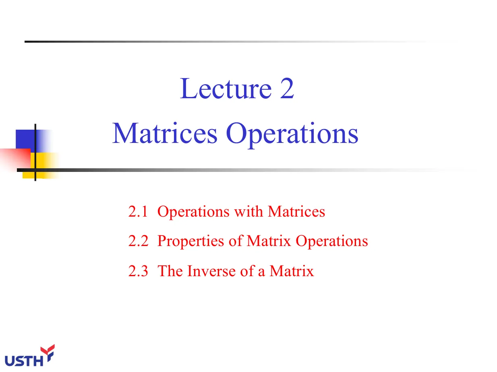
Title slide. Chapter 2 has three sections: 2.1 Operations with matrices, 2.2 Properties of matrix operations, 2.3 The inverse of a matrix.
Slide tiêu đề. Chương 2 có ba mục: 2.1 Các phép toán với ma trận, 2.2 Tính chất của các phép toán ma trận, 2.3 Ma trận nghịch đảo.
2.1 Matrix notation · 2.1 Ký hiệu ma trận
★★★ Core · Cốt lõi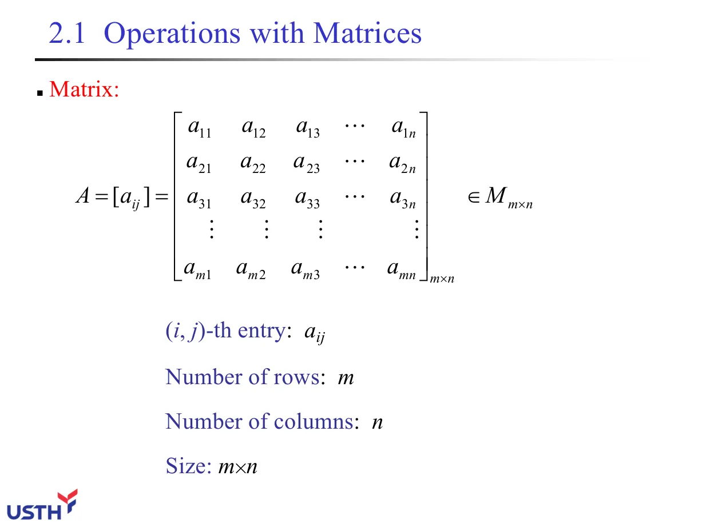
A matrix is written $A=[a_{ij}]\in M_{m\times n}$ (the set of all $m\times n$ real matrices). $a_{ij}$ is the $(i,j)$-th entry: row $i$, column $j$. The number of rows is $m$, the number of columns $n$, the size $m\times n$. Remember: row index first.
Ma trận được viết $A=[a_{ij}]\in M_{m\times n}$ (tập mọi ma trận thực $m\times n$). $a_{ij}$ là phần tử $(i,j)$: hàng $i$, cột $j$. Số hàng là $m$, số cột $n$, cỡ $m\times n$. Nhớ: chỉ số hàng đứng trước.
For $A=\begin{bmatrix}2&-1&0&5\\3&4&-2&1\\0&6&7&-3\end{bmatrix}$ give the size, $a_{23}$ and $a_{32}$.
Với $A=\begin{bmatrix}2&-1&0&5\\3&4&-2&1\\0&6&7&-3\end{bmatrix}$ cho cỡ, $a_{23}$ và $a_{32}$.
Answer and solution · Đáp án và lời giải
Answer · Đáp án: $3\times4$, $a_{23}=-2$, $a_{32}=6$
Three rows and four columns. $a_{23}$ is row 2, column 3: $-2$. $a_{32}$ is row 3, column 2: $6$. (Note $a_{23}\ne a_{32}$: the order of the indices matters.)
Ba hàng và bốn cột. $a_{23}$ là hàng 2, cột 3: $-2$. $a_{32}$ là hàng 3, cột 2: $6$. (Chú ý $a_{23}\ne a_{32}$: thứ tự chỉ số quan trọng.)
Row vectors, column vectors, square matrices · Vectơ hàng, vectơ cột, ma trận vuông
★★★ Core · Cốt lõi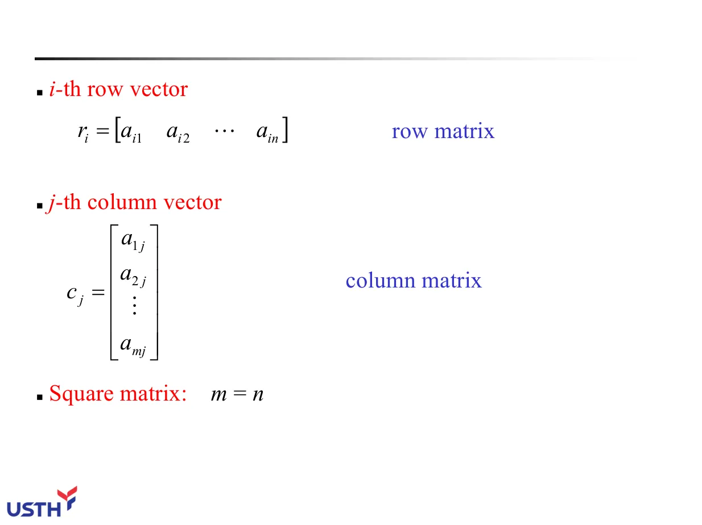
The $i$-th row vector is $r_i=[a_{i1}\ a_{i2}\ \cdots\ a_{in}]$ (a row matrix, size $1\times n$); the $j$-th column vector is $c_j=\begin{bmatrix}a_{1j}\\ \vdots\\ a_{mj}\end{bmatrix}$ (a column matrix, size $m\times1$). A matrix with $m=n$ is square. Rows and columns are the building blocks of matrix multiplication.
Vectơ hàng thứ $i$ là $r_i=[a_{i1}\ a_{i2}\ \cdots\ a_{in}]$ (ma trận hàng, cỡ $1\times n$); vectơ cột thứ $j$ là $c_j=\begin{bmatrix}a_{1j}\\ \vdots\\ a_{mj}\end{bmatrix}$ (ma trận cột, cỡ $m\times1$). Ma trận có $m=n$ là ma trận vuông. Hàng và cột là các viên gạch của phép nhân ma trận.
For $B=\begin{bmatrix}7&0\\-1&3\\2&5\end{bmatrix}$ write the row $r_3$ and the column $c_2$ and give their sizes.
Với $B=\begin{bmatrix}7&0\\-1&3\\2&5\end{bmatrix}$ viết hàng $r_3$ và cột $c_2$ và cho cỡ của chúng.
Answer and solution · Đáp án và lời giải
Answer · Đáp án: $r_3=[2\ \ 5]$ ($1\times2$), $c_2=(0,3,5)^T$ ($3\times1$)
Row 3 of $B$ is $[2\ 5]$, one row and two columns. Column 2 is $\begin{bmatrix}0\\3\\5\end{bmatrix}$, three rows and one column.
Hàng 3 của $B$ là $[2\ 5]$, một hàng hai cột. Cột 2 là $\begin{bmatrix}0\\3\\5\end{bmatrix}$, ba hàng một cột.
Partitioned matrices · Ma trận phân khối
★★ Important · Quan trọng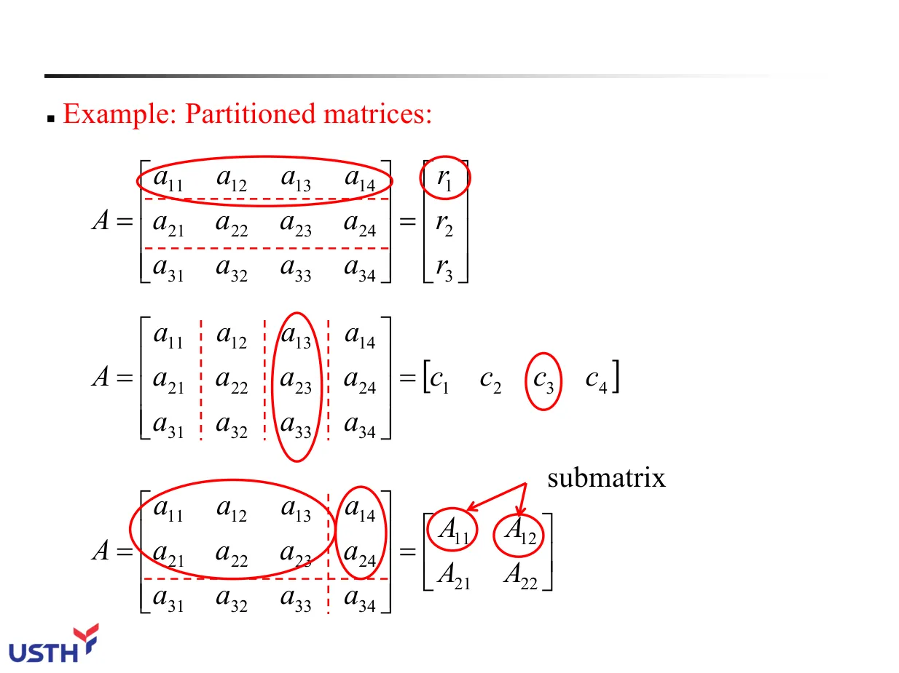
A matrix can be partitioned by dashed lines into submatrices (blocks): into rows $\begin{bmatrix}r_1\\r_2\\r_3\end{bmatrix}$, into columns $[c_1\ c_2\ c_3\ c_4]$, or into four blocks $\begin{bmatrix}A_{11}&A_{12}\\A_{21}&A_{22}\end{bmatrix}$. The row and column partitions are the ones used constantly: $A=[c_1\ \cdots\ c_n]$ lets you speak of "the columns of $A$".
Ma trận có thể được phân khối bằng các đường nét đứt thành các ma trận con (khối): thành các hàng $\begin{bmatrix}r_1\\r_2\\r_3\end{bmatrix}$, thành các cột $[c_1\ c_2\ c_3\ c_4]$, hoặc thành bốn khối $\begin{bmatrix}A_{11}&A_{12}\\A_{21}&A_{22}\end{bmatrix}$. Phân hàng và phân cột là hai cách dùng liên tục: $A=[c_1\ \cdots\ c_n]$ cho phép nói "các cột của $A$".
Partition $A=\begin{bmatrix}1&2&3&4\\5&6&7&8\\9&10&11&12\end{bmatrix}$ into blocks with $A_{11}$ the top-left $2\times2$ block. Write $A_{11}$ and $A_{12}$.
Phân khối $A=\begin{bmatrix}1&2&3&4\\5&6&7&8\\9&10&11&12\end{bmatrix}$ với $A_{11}$ là khối $2\times2$ ở góc trên trái. Viết $A_{11}$ và $A_{12}$.
Answer and solution · Đáp án và lời giải
Answer · Đáp án: $A_{11}=\begin{bmatrix}1&2\\5&6\end{bmatrix}$, $A_{12}=\begin{bmatrix}3&4\\7&8\end{bmatrix}$
Rows 1-2 and columns 1-2 form $A_{11}$; rows 1-2 and columns 3-4 form $A_{12}$ (the remaining blocks are $A_{21}=[9\ 10]$ and $A_{22}=[11\ 12]$).
Hàng 1-2 và cột 1-2 tạo $A_{11}$; hàng 1-2 và cột 3-4 tạo $A_{12}$ (các khối còn lại là $A_{21}=[9\ 10]$ và $A_{22}=[11\ 12]$).
Diagonal matrix and trace · Ma trận chéo và vết
★★★ Core · Cốt lõi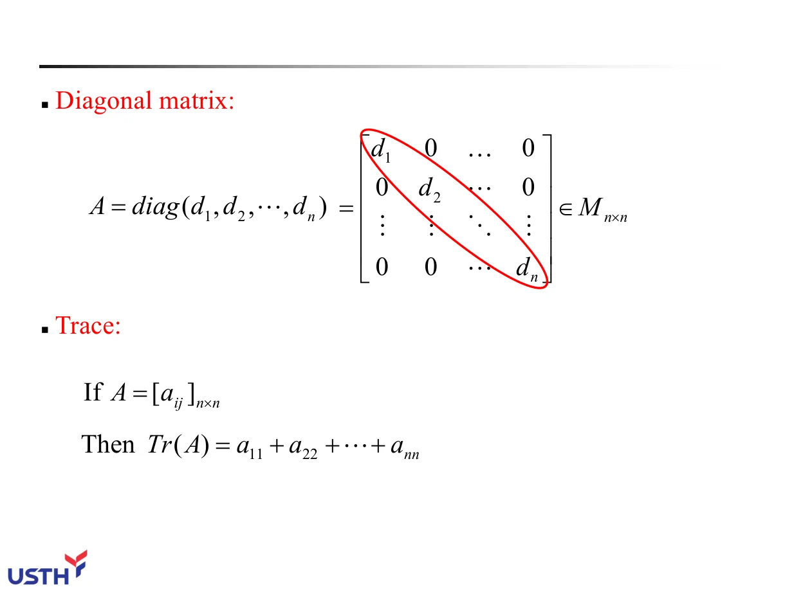
A diagonal matrix $A=\operatorname{diag}(d_1,\dots,d_n)$ is square with zeros off the main diagonal. The trace of a square matrix $A=[a_{ij}]_{n\times n}$ is the sum of its main-diagonal entries, $\operatorname{Tr}(A)=a_{11}+a_{22}+\cdots+a_{nn}$. Only square matrices have a trace.
Ma trận chéo $A=\operatorname{diag}(d_1,\dots,d_n)$ là ma trận vuông có số không ngoài đường chéo chính. Vết của ma trận vuông $A=[a_{ij}]_{n\times n}$ là tổng các phần tử trên đường chéo chính, $\operatorname{Tr}(A)=a_{11}+a_{22}+\cdots+a_{nn}$. Chỉ ma trận vuông mới có vết.
Find $\operatorname{Tr}(A)$ for $A=\begin{bmatrix}2&-1&5\\0&3&4\\7&1&-6\end{bmatrix}$ and for $\operatorname{diag}(1,2,3,4)$.
Tìm $\operatorname{Tr}(A)$ với $A=\begin{bmatrix}2&-1&5\\0&3&4\\7&1&-6\end{bmatrix}$ và với $\operatorname{diag}(1,2,3,4)$.
Answer and solution · Đáp án và lời giải
Answer · Đáp án: $-1$ and $10$
$2+3+(-6)=-1$; $1+2+3+4=10$. Only the diagonal entries count; the entries off the diagonal ($-1,5,0,4,7,1$) play no role.
$2+3+(-6)=-1$; $1+2+3+4=10$. Chỉ các phần tử trên đường chéo được tính; các phần tử ngoài đường chéo ($-1,5,0,4,7,1$) không đóng vai trò gì.
Example: rows and columns of a $2\times3$ matrix · Ví dụ: hàng và cột của ma trận $2\times3$
★★ Important · Quan trọng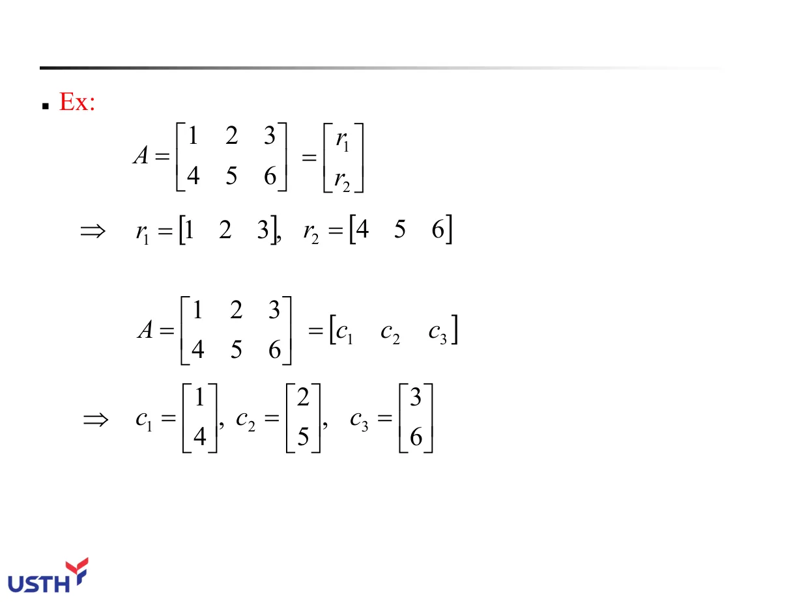
For $A=\begin{bmatrix}1&2&3\\4&5&6\end{bmatrix}$: the rows are $r_1=[1\ 2\ 3]$, $r_2=[4\ 5\ 6]$ and the columns $c_1=\begin{bmatrix}1\\4\end{bmatrix}$, $c_2=\begin{bmatrix}2\\5\end{bmatrix}$, $c_3=\begin{bmatrix}3\\6\end{bmatrix}$. Keep this matrix in mind: it returns in the rule for matrix-vector products.
Với $A=\begin{bmatrix}1&2&3\\4&5&6\end{bmatrix}$: các hàng là $r_1=[1\ 2\ 3]$, $r_2=[4\ 5\ 6]$ và các cột $c_1=\begin{bmatrix}1\\4\end{bmatrix}$, $c_2=\begin{bmatrix}2\\5\end{bmatrix}$, $c_3=\begin{bmatrix}3\\6\end{bmatrix}$. Hãy nhớ ma trận này: nó quay lại trong quy tắc nhân ma trận với vectơ.
Show that $A\begin{bmatrix}2\\-1\\3\end{bmatrix}=2c_1-c_2+3c_3$ for this $A$ (the column picture of $Ax$).
Chứng tỏ $A\begin{bmatrix}2\\-1\\3\end{bmatrix}=2c_1-c_2+3c_3$ với $A$ này (bức tranh cột của $Ax$).
Answer and solution · Đáp án và lời giải
Answer · Đáp án: $\begin{bmatrix}9\\21\end{bmatrix}$ both ways
Row by row: $(1\cdot2+2\cdot(-1)+3\cdot3,\ 4\cdot2+5\cdot(-1)+6\cdot3)=(9,21)$. Column combination: $2\begin{bmatrix}1\\4\end{bmatrix}-\begin{bmatrix}2\\5\end{bmatrix}+3\begin{bmatrix}3\\6\end{bmatrix}=\begin{bmatrix}2-2+9\\8-5+18\end{bmatrix}=\begin{bmatrix}9\\21\end{bmatrix}$. So $Ax$ is a combination of the columns of $A$ with the entries of $x$ as weights.
Theo từng hàng: $(1\cdot2+2\cdot(-1)+3\cdot3,\ 4\cdot2+5\cdot(-1)+6\cdot3)=(9,21)$. Tổ hợp cột: $2\begin{bmatrix}1\\4\end{bmatrix}-\begin{bmatrix}2\\5\end{bmatrix}+3\begin{bmatrix}3\\6\end{bmatrix}=\begin{bmatrix}2-2+9\\8-5+18\end{bmatrix}=\begin{bmatrix}9\\21\end{bmatrix}$. Vậy $Ax$ là một tổ hợp các cột của $A$ với trọng số là các phần tử của $x$.
Equal matrices · Ma trận bằng nhau
★★★ Core · Cốt lõi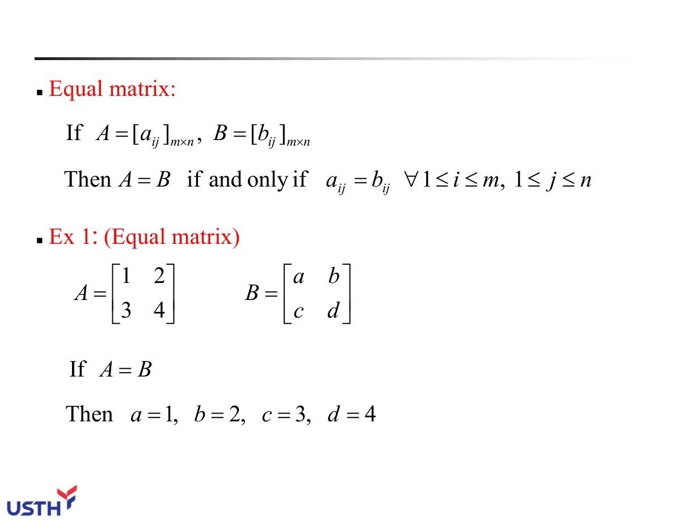
$A=[a_{ij}]_{m\times n}$ and $B=[b_{ij}]_{m\times n}$ are equal iff they have the same size and $a_{ij}=b_{ij}$ for all $i,j$. Example 1: $\begin{bmatrix}1&2\\3&4\end{bmatrix}=\begin{bmatrix}a&b\\c&d\end{bmatrix}$ forces $a=1$, $b=2$, $c=3$, $d=4$. One matrix equation hides $m\cdot n$ scalar equations.
$A=[a_{ij}]_{m\times n}$ và $B=[b_{ij}]_{m\times n}$ bằng nhau khi và chỉ khi cùng cỡ và $a_{ij}=b_{ij}$ với mọi $i,j$. Ví dụ 1: $\begin{bmatrix}1&2\\3&4\end{bmatrix}=\begin{bmatrix}a&b\\c&d\end{bmatrix}$ buộc $a=1$, $b=2$, $c=3$, $d=4$. Một phương trình ma trận ẩn chứa $m\cdot n$ phương trình số.
Find $x,y$ with $\begin{bmatrix}x+y&2\\3&x-y\end{bmatrix}=\begin{bmatrix}5&2\\3&1\end{bmatrix}$.
Tìm $x,y$ sao cho $\begin{bmatrix}x+y&2\\3&x-y\end{bmatrix}=\begin{bmatrix}5&2\\3&1\end{bmatrix}$.
Answer and solution · Đáp án và lời giải
Answer · Đáp án: $x=3$, $y=2$
Entry $(1,1)$: $x+y=5$; entry $(2,2)$: $x-y=1$. Adding: $2x=6$, $x=3$, then $y=2$. The other entries ($2=2$, $3=3$) already agree.
Phần tử $(1,1)$: $x+y=5$; phần tử $(2,2)$: $x-y=1$. Cộng lại: $2x=6$, $x=3$, rồi $y=2$. Các phần tử khác ($2=2$, $3=3$) đã khớp.
Matrix addition · Phép cộng ma trận
★★★ Core · Cốt lõi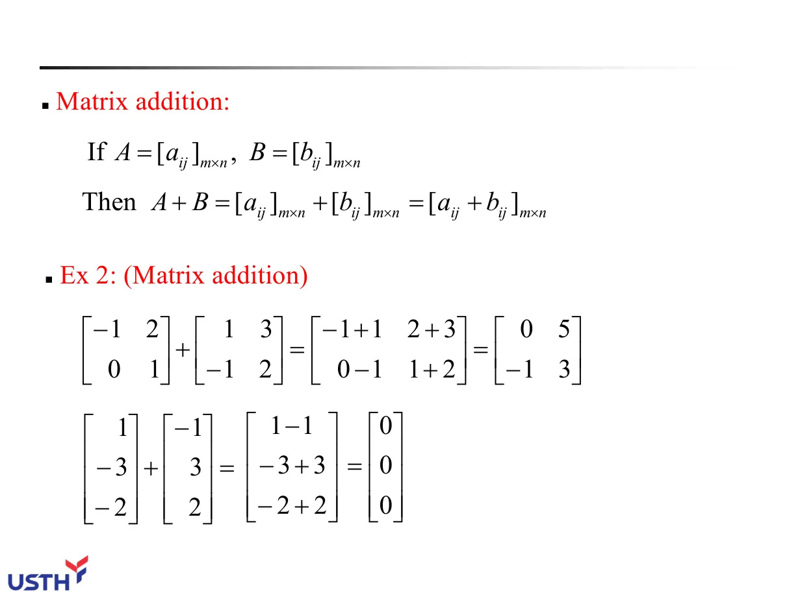
If $A=[a_{ij}]$ and $B=[b_{ij}]$ are both $m\times n$ then $A+B=[a_{ij}+b_{ij}]$: add entry by entry. Matrices of different sizes cannot be added. Example 2: $\begin{bmatrix}-1&2\\0&1\end{bmatrix}+\begin{bmatrix}1&3\\-1&2\end{bmatrix}=\begin{bmatrix}0&5\\-1&3\end{bmatrix}$ and $\begin{bmatrix}1\\-3\\-2\end{bmatrix}+\begin{bmatrix}-1\\3\\2\end{bmatrix}=\begin{bmatrix}0\\0\\0\end{bmatrix}$.
Nếu $A=[a_{ij}]$ và $B=[b_{ij}]$ cùng cỡ $m\times n$ thì $A+B=[a_{ij}+b_{ij}]$: cộng từng phần tử. Ma trận khác cỡ không cộng được. Ví dụ 2: $\begin{bmatrix}-1&2\\0&1\end{bmatrix}+\begin{bmatrix}1&3\\-1&2\end{bmatrix}=\begin{bmatrix}0&5\\-1&3\end{bmatrix}$ và $\begin{bmatrix}1\\-3\\-2\end{bmatrix}+\begin{bmatrix}-1\\3\\2\end{bmatrix}=\begin{bmatrix}0\\0\\0\end{bmatrix}$.
Compute $\begin{bmatrix}1&2\\3&4\end{bmatrix}+\begin{bmatrix}-1&0\\5&-4\end{bmatrix}$. Why is $[1\ 2]+\begin{bmatrix}1\\2\end{bmatrix}$ undefined?
Tính $\begin{bmatrix}1&2\\3&4\end{bmatrix}+\begin{bmatrix}-1&0\\5&-4\end{bmatrix}$. Vì sao $[1\ 2]+\begin{bmatrix}1\\2\end{bmatrix}$ không xác định?
Answer and solution · Đáp án và lời giải
Answer · Đáp án: $\begin{bmatrix}0&2\\8&0\end{bmatrix}$; sizes $1\times2$ and $2\times1$ differ
Entrywise: $1-1=0$, $2+0=2$, $3+5=8$, $4-4=0$. The second sum fails because a $1\times2$ row and a $2\times1$ column have different sizes.
Từng phần tử: $1-1=0$, $2+0=2$, $3+5=8$, $4-4=0$. Tổng thứ hai không xác định vì hàng $1\times2$ và cột $2\times1$ khác cỡ.
Scalar multiplication and subtraction · Nhân vô hướng và phép trừ
★★★ Core · Cốt lõi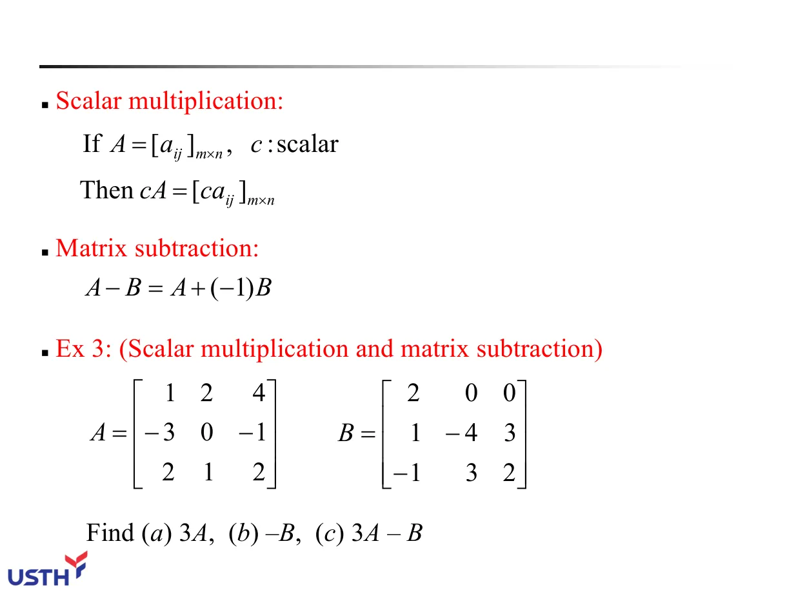
For a scalar $c$, $cA=[ca_{ij}]$: multiply every entry by $c$. Subtraction is defined by $A-B=A+(-1)B$. Example 3: for $A=\begin{bmatrix}1&2&4\\-3&0&-1\\2&1&2\end{bmatrix}$ and $B=\begin{bmatrix}2&0&0\\1&-4&3\\-1&3&2\end{bmatrix}$ find (a) $3A$, (b) $-B$, (c) $3A-B$.
Với vô hướng $c$, $cA=[ca_{ij}]$: nhân mọi phần tử với $c$. Phép trừ được định nghĩa bởi $A-B=A+(-1)B$. Ví dụ 3: với $A=\begin{bmatrix}1&2&4\\-3&0&-1\\2&1&2\end{bmatrix}$ và $B=\begin{bmatrix}2&0&0\\1&-4&3\\-1&3&2\end{bmatrix}$ tìm (a) $3A$, (b) $-B$, (c) $3A-B$.
Compute $2A-3B$ for $A=\begin{bmatrix}1&0\\-2&3\end{bmatrix}$, $B=\begin{bmatrix}4&-1\\0&2\end{bmatrix}$.
Tính $2A-3B$ với $A=\begin{bmatrix}1&0\\-2&3\end{bmatrix}$, $B=\begin{bmatrix}4&-1\\0&2\end{bmatrix}$.
Answer and solution · Đáp án và lời giải
Answer · Đáp án: $\begin{bmatrix}-10&3\\-4&0\end{bmatrix}$
$2A=\begin{bmatrix}2&0\\-4&6\end{bmatrix}$, $3B=\begin{bmatrix}12&-3\\0&6\end{bmatrix}$, so $2A-3B=\begin{bmatrix}2-12&0+3\\-4-0&6-6\end{bmatrix}=\begin{bmatrix}-10&3\\-4&0\end{bmatrix}$.
$2A=\begin{bmatrix}2&0\\-4&6\end{bmatrix}$, $3B=\begin{bmatrix}12&-3\\0&6\end{bmatrix}$, nên $2A-3B=\begin{bmatrix}2-12&0+3\\-4-0&6-6\end{bmatrix}=\begin{bmatrix}-10&3\\-4&0\end{bmatrix}$.
Example 3: the solution · Ví dụ 3: lời giải
★★★ Core · Cốt lõi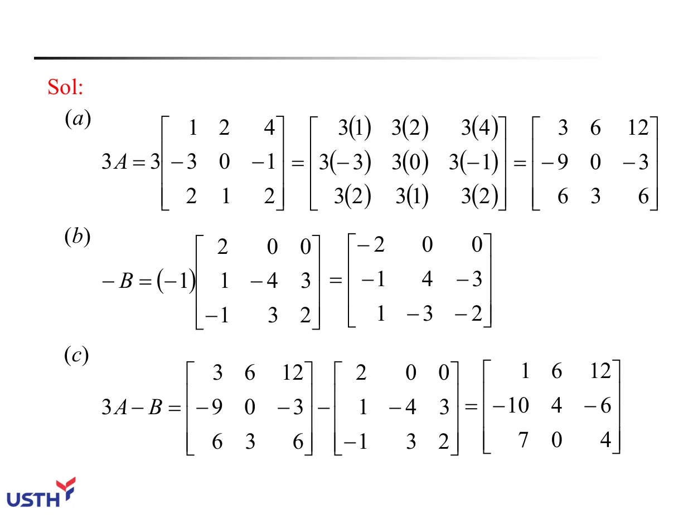
(a) $3A=\begin{bmatrix}3&6&12\\-9&0&-3\\6&3&6\end{bmatrix}$. (b) $-B=\begin{bmatrix}-2&0&0\\-1&4&-3\\1&-3&-2\end{bmatrix}$. (c) $3A-B=\begin{bmatrix}1&6&12\\-10&4&-6\\7&0&4\end{bmatrix}$. In (c) subtract entry by entry from the matrix of (a); do not forget the sign changes on the entries of $B$.
(a) $3A=\begin{bmatrix}3&6&12\\-9&0&-3\\6&3&6\end{bmatrix}$. (b) $-B=\begin{bmatrix}-2&0&0\\-1&4&-3\\1&-3&-2\end{bmatrix}$. (c) $3A-B=\begin{bmatrix}1&6&12\\-10&4&-6\\7&0&4\end{bmatrix}$. Ở (c) trừ từng phần tử từ ma trận ở (a); đừng quên đổi dấu các phần tử của $B$.
Verify the slide: with $A,B$ of Example 3 check that $3A-B=\begin{bmatrix}1&6&12\\-10&4&-6\\7&0&4\end{bmatrix}$ and $-B=(-1)B$.
Kiểm tra slide: với $A,B$ của Ví dụ 3 kiểm tra $3A-B=\begin{bmatrix}1&6&12\\-10&4&-6\\7&0&4\end{bmatrix}$ và $-B=(-1)B$.
Answer and solution · Đáp án và lời giải
Answer · Đáp án: both hold
Entry $(2,1)$: $3(-3)-1=-10$; entry $(3,2)$: $3(1)-3=0$; entry $(3,3)$: $3(2)-2=4$; entry $(1,1)$: $3-2=1$. The other entries are computed the same way.
Phần tử $(2,1)$: $3(-3)-1=-10$; phần tử $(3,2)$: $3(1)-3=0$; phần tử $(3,3)$: $3(2)-2=4$; phần tử $(1,1)$: $3-2=1$. Các phần tử khác tính tương tự.
Matrix multiplication · Phép nhân ma trận
★★★ Core · Cốt lõi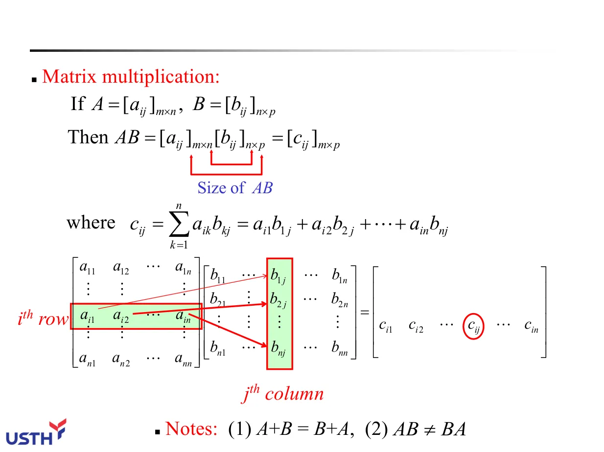
If $A$ is $m\times n$ and $B$ is $n\times p$, then $AB$ is the $m\times p$ matrix with entries $c_{ij}=\sum_{k=1}^na_{ik}b_{kj}=a_{i1}b_{1j}+a_{i2}b_{2j}+\cdots+a_{in}b_{nj}$: the entry in row $i$, column $j$ is the $i$-th row of $A$ times the $j$-th column of $B$. The number of columns of $A$ must equal the number of rows of $B$. Notes: $A+B=B+A$ but in general $AB\ne BA$.
Nếu $A$ cỡ $m\times n$ và $B$ cỡ $n\times p$ thì $AB$ là ma trận cỡ $m\times p$ với các phần tử $c_{ij}=\sum_{k=1}^na_{ik}b_{kj}=a_{i1}b_{1j}+a_{i2}b_{2j}+\cdots+a_{in}b_{nj}$: phần tử hàng $i$, cột $j$ là hàng thứ $i$ của $A$ nhân cột thứ $j$ của $B$. Số cột của $A$ phải bằng số hàng của $B$. Lưu ý: $A+B=B+A$ nhưng nói chung $AB\ne BA$.
Multiplying matrices correctly (sizes, then row times column) is the single most tested skill of Chapter 2.
Nhân ma trận đúng (cỡ trước, rồi hàng nhân cột) là kỹ năng được kiểm tra nhiều nhất của Chương 2.
For $A=\begin{bmatrix}1&0&2\\3&-1&4\end{bmatrix}$ and $B=\begin{bmatrix}1&2&0&1\\0&1&-1&2\\2&0&1&3\end{bmatrix}$ give the size of $AB$ and the entry $c_{21}$. Is $BA$ defined?
Với $A=\begin{bmatrix}1&0&2\\3&-1&4\end{bmatrix}$ và $B=\begin{bmatrix}1&2&0&1\\0&1&-1&2\\2&0&1&3\end{bmatrix}$ cho cỡ của $AB$ và phần tử $c_{21}$. $BA$ có xác định không?
Answer and solution · Đáp án và lời giải
Answer · Đáp án: $AB$ is $2\times4$, $c_{21}=11$; $BA$ is undefined
$A$ is $2\times3$, $B$ is $3\times4$: the inner sizes agree, so $AB$ is $2\times4$. $c_{21}=$ (row 2 of $A$)(column 1 of $B$) $=3\cdot1+(-1)\cdot0+4\cdot2=11$. $BA$ would need $4=2$ (columns of $B$ = rows of $A$): undefined.
$A$ cỡ $2\times3$, $B$ cỡ $3\times4$: hai cỡ trong khớp nhau nên $AB$ cỡ $2\times4$. $c_{21}=$ (hàng 2 của $A$)(cột 1 của $B$) $=3\cdot1+(-1)\cdot0+4\cdot2=11$. $BA$ cần $4=2$ (số cột của $B$ = số hàng của $A$): không xác định.
Example 4: finding $AB$ · Ví dụ 4: tìm $AB$
★★★ Core · Cốt lõi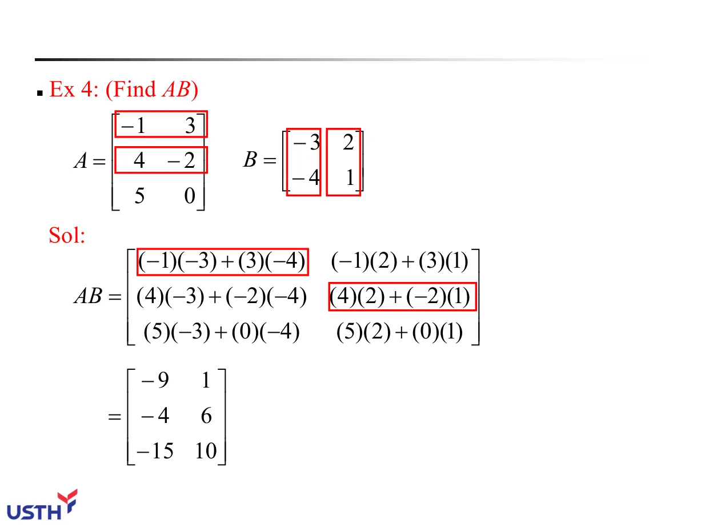
$A=\begin{bmatrix}-1&3\\4&-2\\5&0\end{bmatrix}$ ($3\times2$) and $B=\begin{bmatrix}-3&2\\-4&1\end{bmatrix}$ ($2\times2$), so $AB$ is $3\times2$. Entry by entry: $(-1)(-3)+(3)(-4)=-9$; $(-1)(2)+(3)(1)=1$; $(4)(-3)+(-2)(-4)=-4$; $(4)(2)+(-2)(1)=6$; $(5)(-3)+0=-15$; $(5)(2)+0=10$. So $AB=\begin{bmatrix}-9&1\\-4&6\\-15&10\end{bmatrix}$. Here $BA$ is not defined (inner sizes $2$ and $3$).
$A=\begin{bmatrix}-1&3\\4&-2\\5&0\end{bmatrix}$ ($3\times2$) và $B=\begin{bmatrix}-3&2\\-4&1\end{bmatrix}$ ($2\times2$), nên $AB$ cỡ $3\times2$. Từng phần tử: $(-1)(-3)+(3)(-4)=-9$; $(-1)(2)+(3)(1)=1$; $(4)(-3)+(-2)(-4)=-4$; $(4)(2)+(-2)(1)=6$; $(5)(-3)+0=-15$; $(5)(2)+0=10$. Vậy $AB=\begin{bmatrix}-9&1\\-4&6\\-15&10\end{bmatrix}$. Ở đây $BA$ không xác định (hai cỡ trong là $2$ và $3$).
Check the slide's product and decide whether $BA$ is defined.
Kiểm tra tích trên slide và xác định $BA$ có xác định không.
Answer and solution · Đáp án và lời giải
Answer · Đáp án: $AB$ as shown; $BA$ undefined
$AB$ is $(3\times2)(2\times2)=3\times2$ with the six entries above. $BA$ is $(2\times2)(3\times2)$: the inner sizes $2$ and $3$ differ, so it is not defined.
$AB$ là $(3\times2)(2\times2)=3\times2$ với sáu phần tử ở trên. $BA$ là $(2\times2)(3\times2)$: hai cỡ trong $2$ và $3$ khác nhau nên không xác định.
Matrix form of a linear system · Dạng ma trận của hệ phương trình tuyến tính
★★★ Core · Cốt lõi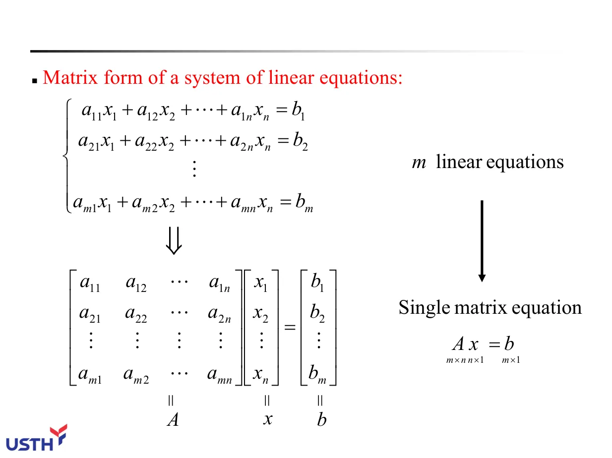
The $m$ equations $a_{i1}x_1+\cdots+a_{in}x_n=b_i$ become one matrix equation $A\,x=b$ with $A$ of size $m\times n$, $x$ of size $n\times1$ and $b$ of size $m\times1$. This is the same $Ax=b$ of Lecture 1, now understood as a matrix product: row $i$ of $A$ times $x$ is the left side of equation $i$.
$m$ phương trình $a_{i1}x_1+\cdots+a_{in}x_n=b_i$ trở thành một phương trình ma trận $A\,x=b$ với $A$ cỡ $m\times n$, $x$ cỡ $n\times1$ và $b$ cỡ $m\times1$. Đây chính là $Ax=b$ của Bài 1, nay được hiểu như một tích ma trận: hàng $i$ của $A$ nhân $x$ là vế trái của phương trình $i$.
Solve $Ax=b$ for $A=\begin{bmatrix}1&2\\3&4\\5&6\end{bmatrix}$, $b=\begin{bmatrix}1\\3\\5\end{bmatrix}$. How many equations and unknowns?
Giải $Ax=b$ với $A=\begin{bmatrix}1&2\\3&4\\5&6\end{bmatrix}$, $b=\begin{bmatrix}1\\3\\5\end{bmatrix}$. Có bao nhiêu phương trình và ẩn?
Answer and solution · Đáp án và lời giải
Answer · Đáp án: $3$ equations, $2$ unknowns; $x=(1,0)^T$
$b$ equals the first column of $A$, so $x=(1,0)^T$ works: $A\begin{bmatrix}1\\0\end{bmatrix}=c_1=b$. It is the only solution because the two columns are not proportional.
$b$ bằng cột thứ nhất của $A$ nên $x=(1,0)^T$ thỏa: $A\begin{bmatrix}1\\0\end{bmatrix}=c_1=b$. Đó là nghiệm duy nhất vì hai cột không tỉ lệ.
2.2 Zero matrix and identity matrix · 2.2 Ma trận không và ma trận đơn vị
★★★ Core · Cốt lõi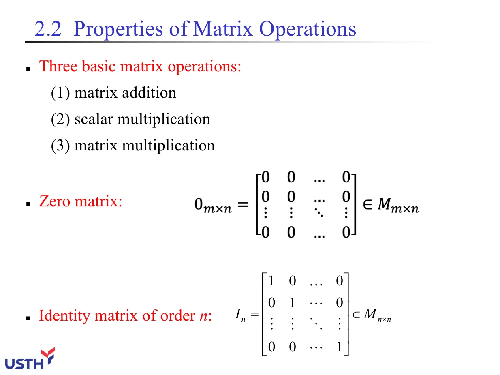
Three basic operations: matrix addition, scalar multiplication, matrix multiplication. Two special matrices: the zero matrix $0_{m\times n}$ (all entries $0$) and the identity matrix $I_n$ (square, $1$ on the main diagonal, $0$ elsewhere). They play the roles of the numbers $0$ and $1$.
Ba phép toán cơ bản: cộng ma trận, nhân vô hướng, nhân ma trận. Hai ma trận đặc biệt: ma trận không $0_{m\times n}$ (mọi phần tử bằng $0$) và ma trận đơn vị $I_n$ (vuông, $1$ trên đường chéo chính, $0$ ở chỗ khác). Chúng đóng vai trò của các số $0$ và $1$.
For $A=\begin{bmatrix}1&2&3\\4&5&6\end{bmatrix}$ check that $I_2A=A$ and $AI_3=A$. Why do we need two different identity matrices?
Với $A=\begin{bmatrix}1&2&3\\4&5&6\end{bmatrix}$ kiểm tra $I_2A=A$ và $AI_3=A$. Vì sao cần hai ma trận đơn vị khác nhau?
Answer and solution · Đáp án và lời giải
Answer · Đáp án: both hold; the sizes must fit: $I_2$ on the left, $I_3$ on the right
$I_2A$ is $(2\times2)(2\times3)$ and $AI_3$ is $(2\times3)(3\times3)$; each product returns $A$. A non-square $A$ needs $I_m$ on the left and $I_n$ on the right so that the inner sizes agree.
$I_2A$ là $(2\times2)(2\times3)$ và $AI_3$ là $(2\times3)(3\times3)$; mỗi tích đều trả về $A$. $A$ không vuông cần $I_m$ bên trái và $I_n$ bên phải để hai cỡ trong khớp nhau.
Properties of addition and scalar multiplication · Tính chất của phép cộng và nhân vô hướng
★★★ Core · Cốt lõi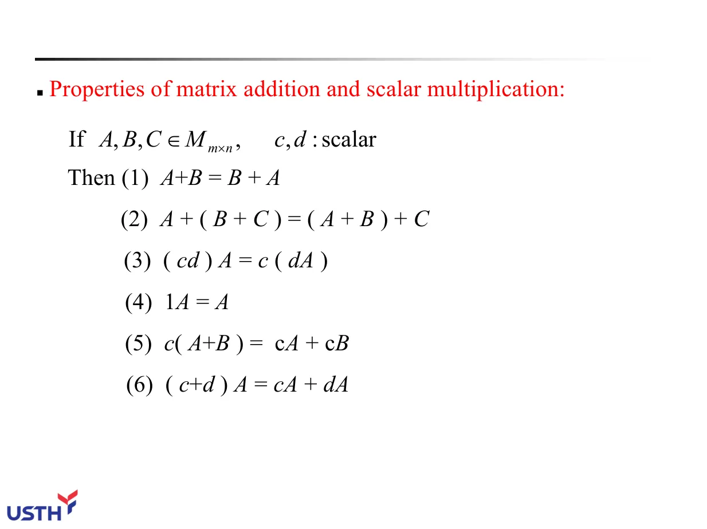
For $A,B,C\in M_{m\times n}$ and scalars $c,d$: (1) $A+B=B+A$; (2) $A+(B+C)=(A+B)+C$; (3) $(cd)A=c(dA)$; (4) $1A=A$; (5) $c(A+B)=cA+cB$; (6) $(c+d)A=cA+dA$. Matrices behave like numbers for these two operations, so ordinary algebra (collecting terms, factoring scalars) is allowed.
Với $A,B,C\in M_{m\times n}$ và vô hướng $c,d$: (1) $A+B=B+A$; (2) $A+(B+C)=(A+B)+C$; (3) $(cd)A=c(dA)$; (4) $1A=A$; (5) $c(A+B)=cA+cB$; (6) $(c+d)A=cA+dA$. Với hai phép toán này ma trận xử sự như số, nên đại số thông thường (gộp số hạng, đặt thừa số vô hướng) được phép.
Check $(c+d)A=cA+dA$ with $c=2$, $d=-3$ and $c(A+B)=cA+cB$ for $A=\begin{bmatrix}1&2\\3&4\end{bmatrix}$, $B=\begin{bmatrix}0&-1\\2&5\end{bmatrix}$.
Kiểm tra $(c+d)A=cA+dA$ với $c=2$, $d=-3$ và $c(A+B)=cA+cB$ với $A=\begin{bmatrix}1&2\\3&4\end{bmatrix}$, $B=\begin{bmatrix}0&-1\\2&5\end{bmatrix}$.
Answer and solution · Đáp án và lời giải
Answer · Đáp án: both identities hold
$(2-3)A=-A=\begin{bmatrix}-1&-2\\-3&-4\end{bmatrix}$ and $2A-3A$ gives the same. $2(A+B)=2\begin{bmatrix}1&1\\5&9\end{bmatrix}=\begin{bmatrix}2&2\\10&18\end{bmatrix}=2A+2B$. Both sides are computed from the same entries.
$(2-3)A=-A=\begin{bmatrix}-1&-2\\-3&-4\end{bmatrix}$ và $2A-3A$ cho kết quả như vậy. $2(A+B)=2\begin{bmatrix}1&1\\5&9\end{bmatrix}=\begin{bmatrix}2&2\\10&18\end{bmatrix}=2A+2B$. Hai vế đều tính từ cùng các phần tử.
Zero matrices, identity matrices · Ma trận không, ma trận đơn vị
★★★ Core · Cốt lõi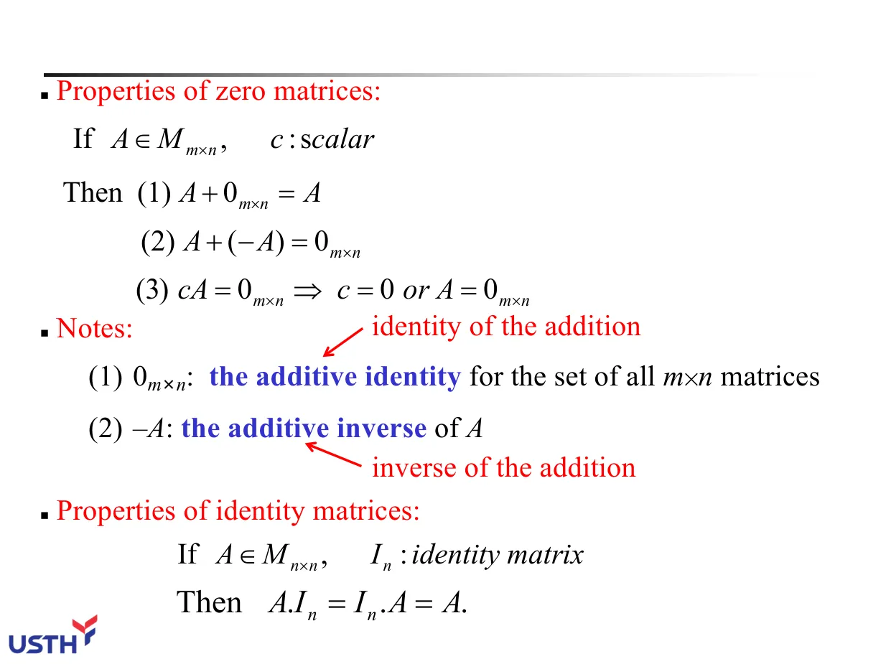
Zero matrices: $A+0=A$; $A+(-A)=0$; $cA=0\Rightarrow c=0$ or $A=0$. So $0_{m\times n}$ is the additive identity and $-A$ the additive inverse of $A$. Identity matrices: for square $A\in M_{n\times n}$, $A\,I_n=I_n\,A=A$. Warning: for products the zero rule is false: $AB=0$ does not imply $A=0$ or $B=0$.
Ma trận không: $A+0=A$; $A+(-A)=0$; $cA=0\Rightarrow c=0$ hoặc $A=0$. Vậy $0_{m\times n}$ là phần tử đơn vị của phép cộng và $-A$ là phần tử đối của $A$. Ma trận đơn vị: với $A\in M_{n\times n}$ vuông, $A\,I_n=I_n\,A=A$. Cảnh báo: với phép nhân, quy tắc về số không là sai: $AB=0$ không kéo theo $A=0$ hay $B=0$.
Find a nonzero $2\times2$ matrix $N$ with $N^2=0$.
Tìm ma trận $N$ cỡ $2\times2$ khác không với $N^2=0$.
Answer and solution · Đáp án và lời giải
Answer · Đáp án: $N=\begin{bmatrix}0&1\\0&0\end{bmatrix}$
$N^2=\begin{bmatrix}0&1\\0&0\end{bmatrix}\begin{bmatrix}0&1\\0&0\end{bmatrix}=\begin{bmatrix}0\cdot0+1\cdot0&0\cdot1+1\cdot0\\0&0\end{bmatrix}=0$ although $N\ne0$. So the real-number rule "$xy=0\Rightarrow x=0$ or $y=0$" fails for matrices.
$N^2=\begin{bmatrix}0&1\\0&0\end{bmatrix}\begin{bmatrix}0&1\\0&0\end{bmatrix}=\begin{bmatrix}0\cdot0+1\cdot0&0\cdot1+1\cdot0\\0&0\end{bmatrix}=0$ dù $N\ne0$. Vậy quy tắc của số thực "$xy=0\Rightarrow x=0$ hoặc $y=0$" không đúng cho ma trận.
Properties of matrix multiplication · Tính chất của phép nhân ma trận
★★★ Core · Cốt lõi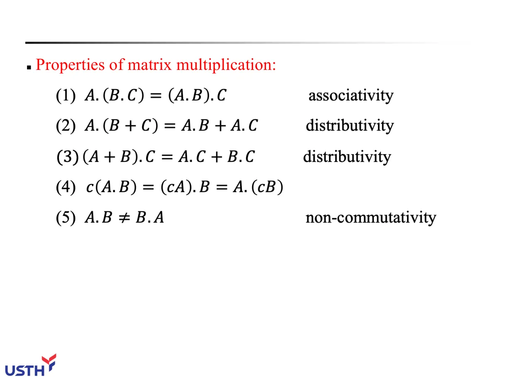
(1) $A(BC)=(AB)C$ (associativity); (2) $A(B+C)=AB+AC$ and (3) $(A+B)C=AC+BC$ (distributivity); (4) $c(AB)=(cA)B=A(cB)$; (5) $AB\ne BA$ in general (non-commutativity). Consequence of (5): the usual formulas $(A+B)^2=A^2+2AB+B^2$ and $(AB)^2=A^2B^2$ are false for matrices; the correct expansion is $(A+B)^2=A^2+AB+BA+B^2$.
(1) $A(BC)=(AB)C$ (kết hợp); (2) $A(B+C)=AB+AC$ và (3) $(A+B)C=AC+BC$ (phân phối); (4) $c(AB)=(cA)B=A(cB)$; (5) $AB\ne BA$ nói chung (không giao hoán). Hệ quả của (5): các công thức quen thuộc $(A+B)^2=A^2+2AB+B^2$ và $(AB)^2=A^2B^2$ là sai với ma trận; khai triển đúng là $(A+B)^2=A^2+AB+BA+B^2$.
The failed binomial formula is a favourite trap: whenever two matrices are multiplied, keep their order.
Công thức nhị thức sai là cái bẫy ưa thích: bao giờ nhân hai ma trận cũng giữ nguyên thứ tự.
For $A=\begin{bmatrix}1&1\\0&1\end{bmatrix}$, $B=\begin{bmatrix}1&0\\1&1\end{bmatrix}$ show that $(A+B)^2\ne A^2+2AB+B^2$.
Với $A=\begin{bmatrix}1&1\\0&1\end{bmatrix}$, $B=\begin{bmatrix}1&0\\1&1\end{bmatrix}$ chứng tỏ $(A+B)^2\ne A^2+2AB+B^2$.
Answer and solution · Đáp án và lời giải
Answer · Đáp án: $(A+B)^2=\begin{bmatrix}5&4\\4&5\end{bmatrix}$ but $A^2+2AB+B^2=\begin{bmatrix}6&4\\4&4\end{bmatrix}$
$A+B=\begin{bmatrix}2&1\\1&2\end{bmatrix}$ and $(A+B)^2=\begin{bmatrix}5&4\\4&5\end{bmatrix}$. Also $A^2=\begin{bmatrix}1&2\\0&1\end{bmatrix}$, $AB=\begin{bmatrix}2&1\\1&1\end{bmatrix}$, $BA=\begin{bmatrix}1&1\\1&2\end{bmatrix}$, $B^2=\begin{bmatrix}1&0\\2&1\end{bmatrix}$, so $A^2+2AB+B^2=\begin{bmatrix}6&4\\4&4\end{bmatrix}$ but $A^2+AB+BA+B^2=\begin{bmatrix}5&4\\4&5\end{bmatrix}$ ✓. The difference arises because $AB\ne BA$.
$A+B=\begin{bmatrix}2&1\\1&2\end{bmatrix}$ và $(A+B)^2=\begin{bmatrix}5&4\\4&5\end{bmatrix}$. Ngoài ra $A^2=\begin{bmatrix}1&2\\0&1\end{bmatrix}$, $AB=\begin{bmatrix}2&1\\1&1\end{bmatrix}$, $BA=\begin{bmatrix}1&1\\1&2\end{bmatrix}$, $B^2=\begin{bmatrix}1&0\\2&1\end{bmatrix}$, nên $A^2+2AB+B^2=\begin{bmatrix}6&4\\4&4\end{bmatrix}$ còn $A^2+AB+BA+B^2=\begin{bmatrix}5&4\\4&5\end{bmatrix}$ ✓. Sự khác biệt do $AB\ne BA$.
The transpose · Ma trận chuyển vị
★★★ Core · Cốt lõi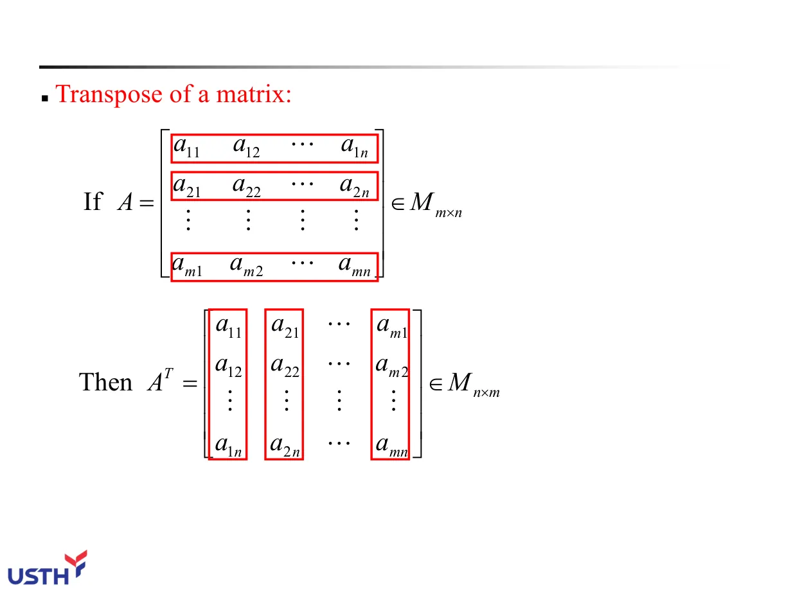
The transpose $A^T$ of an $m\times n$ matrix $A$ is the $n\times m$ matrix whose rows are the columns of $A$: $(A^T)_{ij}=a_{ji}$. Row 1 of $A$ becomes column 1 of $A^T$, and so on. The size changes from $m\times n$ to $n\times m$.
Chuyển vị $A^T$ của ma trận $A$ cỡ $m\times n$ là ma trận cỡ $n\times m$ có các hàng là các cột của $A$: $(A^T)_{ij}=a_{ji}$. Hàng 1 của $A$ thành cột 1 của $A^T$, v.v. Cỡ đổi từ $m\times n$ sang $n\times m$.
Find $A^T$ for $A=\begin{bmatrix}1&-2&0\\3&5&4\end{bmatrix}$ and state its size.
Tìm $A^T$ với $A=\begin{bmatrix}1&-2&0\\3&5&4\end{bmatrix}$ và nêu cỡ.
Answer and solution · Đáp án và lời giải
Answer · Đáp án: $A^T=\begin{bmatrix}1&3\\-2&5\\0&4\end{bmatrix}$, size $3\times2$
Rows of $A$ become columns: $(1,-2,0)\to$ first column, $(3,5,4)\to$ second column. $A$ is $2\times3$ so $A^T$ is $3\times2$.
Các hàng của $A$ thành cột: $(1,-2,0)\to$ cột thứ nhất, $(3,5,4)\to$ cột thứ hai. $A$ cỡ $2\times3$ nên $A^T$ cỡ $3\times2$.
Example 8: transposes · Ví dụ 8: chuyển vị
★★★ Core · Cốt lõi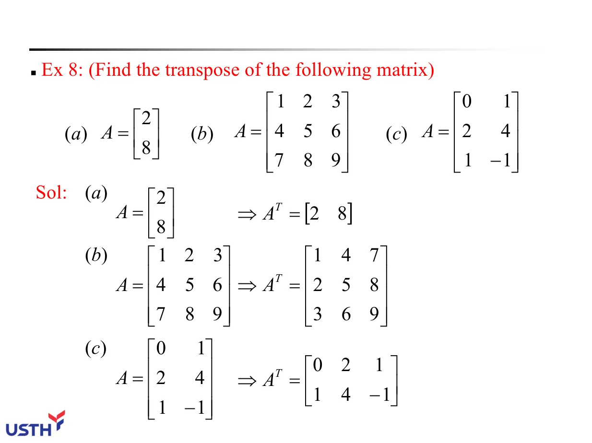
(a) $\begin{bmatrix}2\\8\end{bmatrix}^T=[2\ \ 8]$ (a column becomes a row). (b) $\begin{bmatrix}1&2&3\\4&5&6\\7&8&9\end{bmatrix}^T=\begin{bmatrix}1&4&7\\2&5&8\\3&6&9\end{bmatrix}$ (reflect across the main diagonal). (c) $\begin{bmatrix}0&1\\2&4\\1&-1\end{bmatrix}^T=\begin{bmatrix}0&2&1\\1&4&-1\end{bmatrix}$ ($3\times2$ becomes $2\times3$).
(a) $\begin{bmatrix}2\\8\end{bmatrix}^T=[2\ \ 8]$ (cột thành hàng). (b) $\begin{bmatrix}1&2&3\\4&5&6\\7&8&9\end{bmatrix}^T=\begin{bmatrix}1&4&7\\2&5&8\\3&6&9\end{bmatrix}$ (đối xứng qua đường chéo chính). (c) $\begin{bmatrix}0&1\\2&4\\1&-1\end{bmatrix}^T=\begin{bmatrix}0&2&1\\1&4&-1\end{bmatrix}$ ($3\times2$ thành $2\times3$).
Find the transposes of $\operatorname{diag}(1,2,3)$ and of the upper triangular matrix $\begin{bmatrix}1&2\\0&3\end{bmatrix}$.
Tìm chuyển vị của $\operatorname{diag}(1,2,3)$ và của ma trận tam giác trên $\begin{bmatrix}1&2\\0&3\end{bmatrix}$.
Answer and solution · Đáp án và lời giải
Answer · Đáp án: $\operatorname{diag}(1,2,3)^T=\operatorname{diag}(1,2,3)$ and $\begin{bmatrix}1&0\\2&3\end{bmatrix}$
A diagonal matrix equals its transpose. For the triangular matrix the entry $2$ at $(1,2)$ moves to $(2,1)$: the transpose is lower triangular.
Ma trận chéo bằng chuyển vị của nó. Với ma trận tam giác, phần tử $2$ ở $(1,2)$ chuyển xuống $(2,1)$: chuyển vị là tam giác dưới.
Properties of transposes · Tính chất của chuyển vị
★★★ Core · Cốt lõi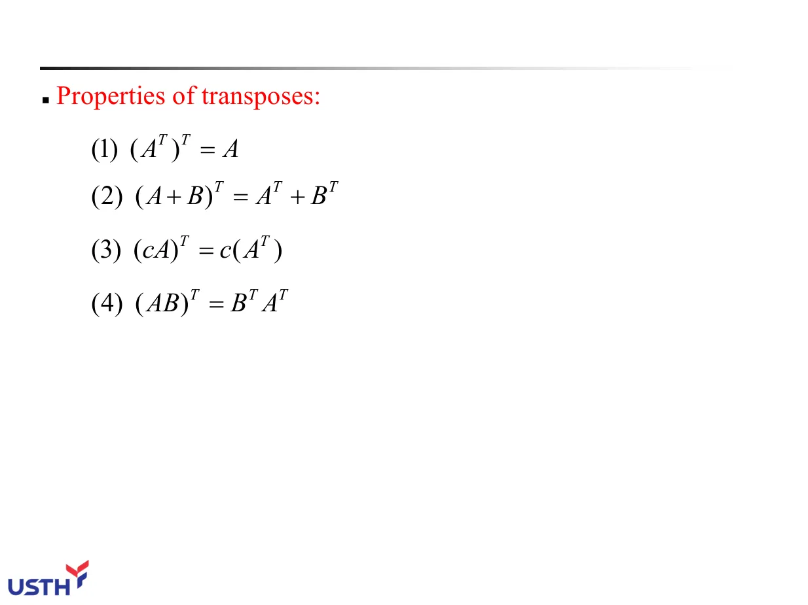
(1) $(A^T)^T=A$; (2) $(A+B)^T=A^T+B^T$; (3) $(cA)^T=c(A^T)$; (4) $(AB)^T=B^TA^T$: the transpose of a product is the product of the transposes in reverse order. This order reversal is the one to remember (it will return for inverses).
(1) $(A^T)^T=A$; (2) $(A+B)^T=A^T+B^T$; (3) $(cA)^T=c(A^T)$; (4) $(AB)^T=B^TA^T$: chuyển vị của một tích là tích các chuyển vị theo thứ tự ngược lại. Việc đảo thứ tự này là điều cần nhớ (nó sẽ quay lại với ma trận nghịch đảo).
For $A=\begin{bmatrix}1&2\\3&4\\5&6\end{bmatrix}$ and $B=\begin{bmatrix}1&0&2\\-1&3&1\end{bmatrix}$ verify $(AB)^T=B^TA^T$ and explain why $A^TB^T$ is not equal to it.
Với $A=\begin{bmatrix}1&2\\3&4\\5&6\end{bmatrix}$ và $B=\begin{bmatrix}1&0&2\\-1&3&1\end{bmatrix}$ kiểm tra $(AB)^T=B^TA^T$ và giải thích vì sao $A^TB^T$ không bằng nó.
Answer and solution · Đáp án và lời giải
Answer · Đáp án: $(AB)^T=B^TA^T$ ($3\times3$); $A^TB^T$ is $2\times2$
$AB$ is $(3\times2)(2\times3)=3\times3$, so $(AB)^T$ is $3\times3$. $B^TA^T$ is $(3\times2)(2\times3)=3\times3$ and equals it. $A^TB^T$ is $(2\times3)(3\times2)=2\times2$: it does not even have the right size.
$AB$ là $(3\times2)(2\times3)=3\times3$ nên $(AB)^T$ cỡ $3\times3$. $B^TA^T$ là $(3\times2)(2\times3)=3\times3$ và bằng nó. $A^TB^T$ là $(2\times3)(3\times2)=2\times2$: nó còn không đúng cỡ.
Symmetric matrices · Ma trận đối xứng
★★★ Core · Cốt lõi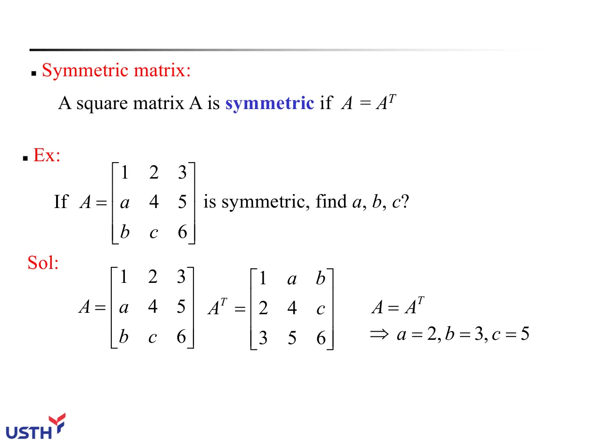
A square matrix $A$ is symmetric if $A=A^T$, i.e. $a_{ij}=a_{ji}$: the matrix is a mirror image across the main diagonal. Example: $A=\begin{bmatrix}1&2&3\\a&4&5\\b&c&6\end{bmatrix}$ is symmetric iff $a=2$, $b=3$, $c=5$ (compare $A$ with $A^T=\begin{bmatrix}1&a&b\\2&4&c\\3&5&6\end{bmatrix}$).
Ma trận vuông $A$ đối xứng nếu $A=A^T$, tức $a_{ij}=a_{ji}$: ma trận là ảnh gương qua đường chéo chính. Ví dụ: $A=\begin{bmatrix}1&2&3\\a&4&5\\b&c&6\end{bmatrix}$ đối xứng khi và chỉ khi $a=2$, $b=3$, $c=5$ (so $A$ với $A^T=\begin{bmatrix}1&a&b\\2&4&c\\3&5&6\end{bmatrix}$).
Find $x,y$ so that $A=\begin{bmatrix}1&x&4\\2&3&y\\4&6&5\end{bmatrix}$ is symmetric.
Tìm $x,y$ để $A=\begin{bmatrix}1&x&4\\2&3&y\\4&6&5\end{bmatrix}$ đối xứng.
Answer and solution · Đáp án và lời giải
Answer · Đáp án: $x=2$, $y=6$
$A=A^T$ requires $a_{12}=a_{21}$, i.e. $x=2$, and $a_{23}=a_{32}$, i.e. $y=6$ (and $a_{13}=a_{31}=4$ already holds).
$A=A^T$ đòi hỏi $a_{12}=a_{21}$, tức $x=2$, và $a_{23}=a_{32}$, tức $y=6$ (còn $a_{13}=a_{31}=4$ đã thỏa).
$AA^T$ and $A^TA$; the three situations for $AB$ and $BA$ · $AA^T$ và $A^TA$; ba tình huống cho $AB$ và $BA$
★★★ Core · Cốt lõi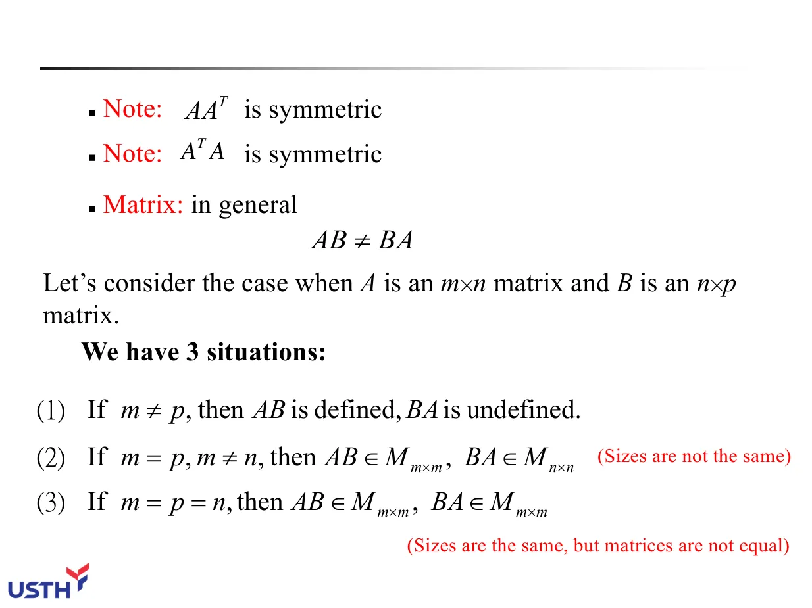
Notes: $AA^T$ and $A^TA$ are always symmetric (for any matrix $A$, since $(AA^T)^T=(A^T)^TA^T=AA^T$). In general $AB\ne BA$. For $A$ of size $m\times n$ and $B$ of size $n\times p$ there are three situations: (1) $m\ne p$: $AB$ is defined and $BA$ is undefined; (2) $m=p\ne n$: $AB$ is $m\times m$ and $BA$ is $n\times n$ (different sizes); (3) $m=p=n$: both are $n\times n$ but usually not equal.
Lưu ý: $AA^T$ và $A^TA$ luôn đối xứng (với mọi ma trận $A$, vì $(AA^T)^T=(A^T)^TA^T=AA^T$). Nói chung $AB\ne BA$. Với $A$ cỡ $m\times n$ và $B$ cỡ $n\times p$ có ba tình huống: (1) $m\ne p$: $AB$ xác định còn $BA$ không xác định; (2) $m=p\ne n$: $AB$ cỡ $m\times m$ và $BA$ cỡ $n\times n$ (khác cỡ); (3) $m=p=n$: cả hai đều $n\times n$ nhưng thường không bằng nhau.
For $A=\begin{bmatrix}1&2&0\\-1&1&3\end{bmatrix}$ compute $AA^T$ and $A^TA$; give their sizes and check that both are symmetric.
Với $A=\begin{bmatrix}1&2&0\\-1&1&3\end{bmatrix}$ tính $AA^T$ và $A^TA$; cho cỡ và kiểm tra cả hai đối xứng.
Answer and solution · Đáp án và lời giải
Answer · Đáp án: $AA^T=\begin{bmatrix}5&1\\1&11\end{bmatrix}$ ($2\times2$); $A^TA$ is $3\times3$, both symmetric
$AA^T$: $(1,2,0)\cdot(1,2,0)=5$, $(1,2,0)\cdot(-1,1,3)=1$, $(-1,1,3)\cdot(-1,1,3)=11$. $A^TA=\begin{bmatrix}2&1&-3\\1&5&3\\-3&3&9\end{bmatrix}$ is $3\times3$. Both equal their transposes, and they do not even have the same size (situation (2)).
$AA^T$: $(1,2,0)\cdot(1,2,0)=5$, $(1,2,0)\cdot(-1,1,3)=1$, $(-1,1,3)\cdot(-1,1,3)=11$. $A^TA=\begin{bmatrix}2&1&-3\\1&5&3\\-3&3&9\end{bmatrix}$ cỡ $3\times3$. Cả hai bằng chuyển vị của chúng, và chúng còn không cùng cỡ (tình huống (2)).
Example 4: $AB\ne BA$ · Ví dụ 4: $AB\ne BA$
★★★ Core · Cốt lõi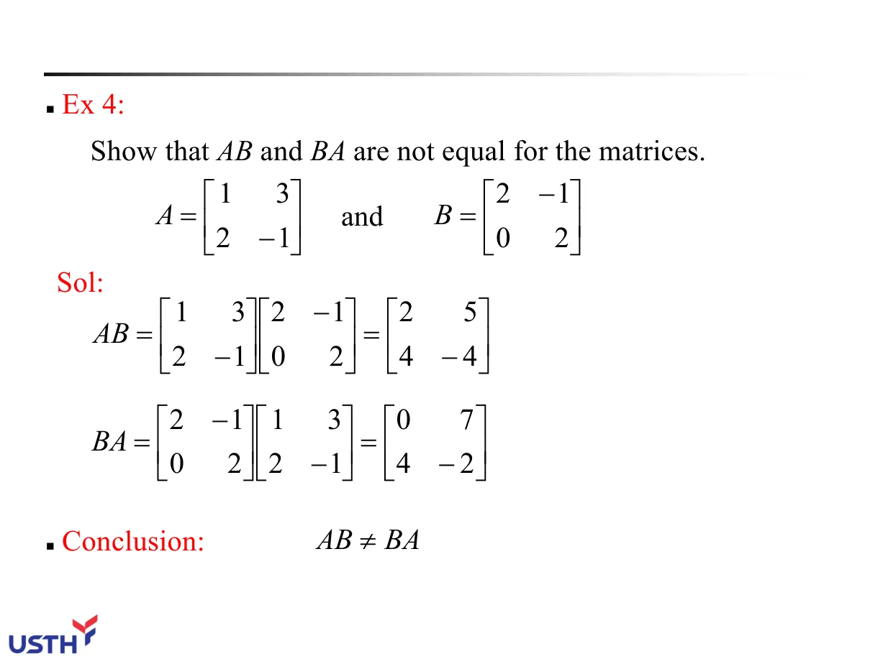
Show that $AB\ne BA$ for $A=\begin{bmatrix}1&3\\2&-1\end{bmatrix}$ and $B=\begin{bmatrix}2&-1\\0&2\end{bmatrix}$. $AB=\begin{bmatrix}2&5\\4&-4\end{bmatrix}$ but $BA=\begin{bmatrix}0&7\\4&-2\end{bmatrix}$. A single counterexample is enough to disprove commutativity. (Some pairs do commute, but you cannot count on it.)
Chứng tỏ $AB\ne BA$ với $A=\begin{bmatrix}1&3\\2&-1\end{bmatrix}$ và $B=\begin{bmatrix}2&-1\\0&2\end{bmatrix}$. $AB=\begin{bmatrix}2&5\\4&-4\end{bmatrix}$ nhưng $BA=\begin{bmatrix}0&7\\4&-2\end{bmatrix}$. Một phản ví dụ là đủ để bác bỏ tính giao hoán. (Một số cặp có giao hoán, nhưng không thể trông cậy vào điều đó.)
Do $A=\begin{bmatrix}1&2\\0&1\end{bmatrix}$ and $B=\begin{bmatrix}3&4\\0&3\end{bmatrix}$ commute? Do $C=\begin{bmatrix}1&2\\3&4\end{bmatrix}$ and $D=\begin{bmatrix}0&1\\1&0\end{bmatrix}$?
$A=\begin{bmatrix}1&2\\0&1\end{bmatrix}$ và $B=\begin{bmatrix}3&4\\0&3\end{bmatrix}$ có giao hoán không? $C=\begin{bmatrix}1&2\\3&4\end{bmatrix}$ và $D=\begin{bmatrix}0&1\\1&0\end{bmatrix}$ thì sao?
Answer and solution · Đáp án và lời giải
Answer · Đáp án: $A$ and $B$ commute ($AB=BA=\begin{bmatrix}3&10\\0&3\end{bmatrix}$); $C$ and $D$ do not
$AB=\begin{bmatrix}3&4+6\\0&3\end{bmatrix}=\begin{bmatrix}3&10\\0&3\end{bmatrix}$ and $BA=\begin{bmatrix}3&6+4\\0&3\end{bmatrix}$: equal. $CD=\begin{bmatrix}2&1\\4&3\end{bmatrix}$ (columns swapped) but $DC=\begin{bmatrix}3&4\\1&2\end{bmatrix}$ (rows swapped): different.
$AB=\begin{bmatrix}3&4+6\\0&3\end{bmatrix}=\begin{bmatrix}3&10\\0&3\end{bmatrix}$ và $BA=\begin{bmatrix}3&6+4\\0&3\end{bmatrix}$: bằng nhau. $CD=\begin{bmatrix}2&1\\4&3\end{bmatrix}$ (đổi chỗ các cột) nhưng $DC=\begin{bmatrix}3&4\\1&2\end{bmatrix}$ (đổi chỗ các hàng): khác nhau.
The cancellation law fails for matrices · Luật giản ước không đúng cho ma trận
★★★ Core · Cốt lõi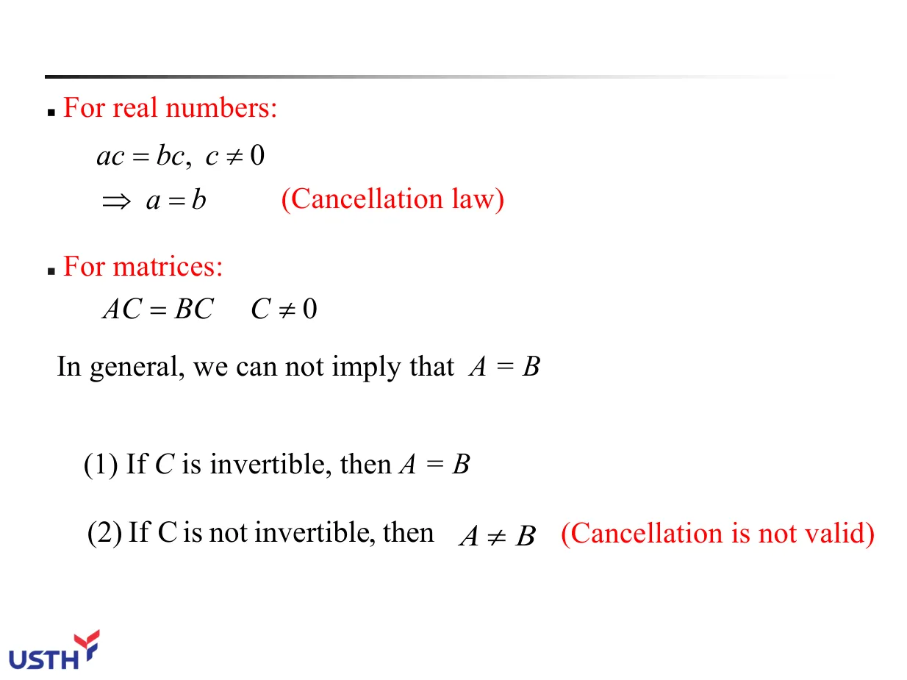
For real numbers $ac=bc$ with $c\ne0$ gives $a=b$ (cancellation law). For matrices $AC=BC$ with $C\ne0$ does not in general give $A=B$. It does if $C$ is invertible (multiply on the right by $C^{-1}$); if $C$ is not invertible the cancellation is not valid.
Với số thực $ac=bc$ và $c\ne0$ cho $a=b$ (luật giản ước). Với ma trận $AC=BC$ và $C\ne0$ không nói chung cho $A=B$. Nó đúng nếu $C$ khả nghịch (nhân bên phải với $C^{-1}$); nếu $C$ không khả nghịch thì việc giản ước không hợp lệ.
Let $C=\begin{bmatrix}1&2\\2&4\end{bmatrix}$ (singular), $K=\begin{bmatrix}2&-1\\0&0\end{bmatrix}$, $A=I$ and $B=I+K$. Show that $AC=BC$ but $A\ne B$.
Cho $C=\begin{bmatrix}1&2\\2&4\end{bmatrix}$ (suy biến), $K=\begin{bmatrix}2&-1\\0&0\end{bmatrix}$, $A=I$ và $B=I+K$. Chứng tỏ $AC=BC$ nhưng $A\ne B$.
Answer and solution · Đáp án và lời giải
Answer · Đáp án: $KC=0$, so $BC=C+KC=C=AC$, while $B=\begin{bmatrix}3&-1\\0&1\end{bmatrix}\ne I$
$KC=\begin{bmatrix}2-2&4-4\\0&0\end{bmatrix}=0$. Hence $BC=(I+K)C=C+0=AC$. But $B\ne A$, and $\det C=4-4=0$: $C$ has no inverse to cancel with.
$KC=\begin{bmatrix}2-2&4-4\\0&0\end{bmatrix}=0$. Do đó $BC=(I+K)C=C+0=AC$. Nhưng $B\ne A$, và $\det C=4-4=0$: $C$ không có nghịch đảo để giản ước.
Example 5: cancellation fails · Ví dụ 5: giản ước không đúng
★★★ Core · Cốt lõi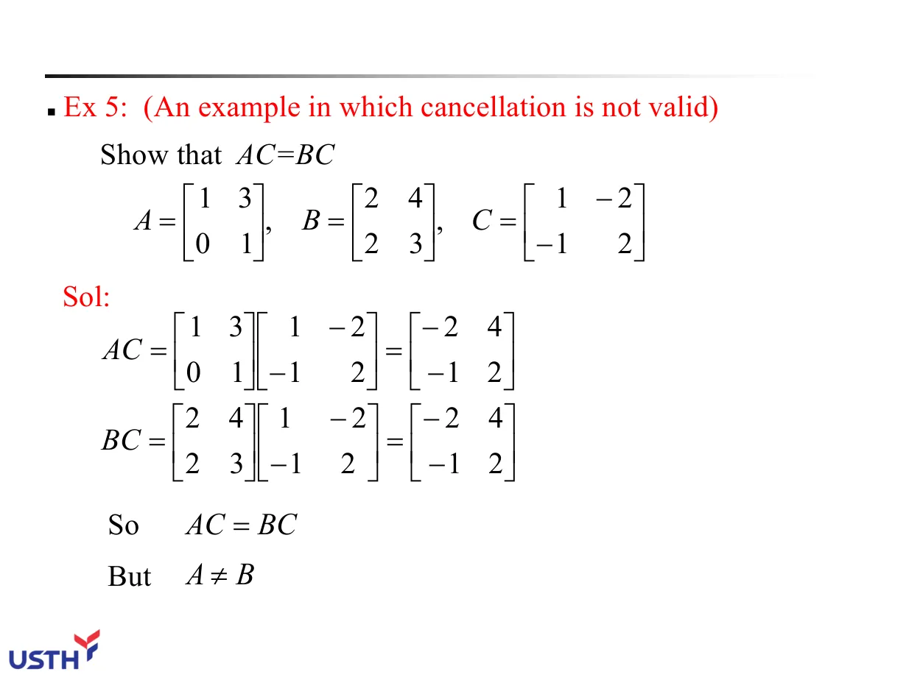
$A=\begin{bmatrix}1&3\\0&1\end{bmatrix}$, $B=\begin{bmatrix}2&4\\2&3\end{bmatrix}$, $C=\begin{bmatrix}1&-2\\-1&2\end{bmatrix}$. Then $AC=\begin{bmatrix}-2&4\\-1&2\end{bmatrix}=BC$, but $A\ne B$. The reason: $C$ is singular (its second row is $-1$ times the first, $\det C=2-2=0$), so it cannot be cancelled.
$A=\begin{bmatrix}1&3\\0&1\end{bmatrix}$, $B=\begin{bmatrix}2&4\\2&3\end{bmatrix}$, $C=\begin{bmatrix}1&-2\\-1&2\end{bmatrix}$. Khi đó $AC=\begin{bmatrix}-2&4\\-1&2\end{bmatrix}=BC$, nhưng $A\ne B$. Lý do: $C$ suy biến (hàng hai bằng $-1$ lần hàng một, $\det C=2-2=0$) nên không thể giản ước.
Verify the slide: $AC=BC$, $A\ne B$ and $\det C=0$.
Kiểm tra slide: $AC=BC$, $A\ne B$ và $\det C=0$.
Answer and solution · Đáp án và lời giải
Answer · Đáp án: all three hold
$AC$: row 1 $=(1\cdot1+3\cdot(-1),\ 1\cdot(-2)+3\cdot2)=(-2,4)$, row 2 $=(-1,2)$. $BC$: row 1 $=(2-4,\ -4+8)=(-2,4)$, row 2 $=(2-3,\ -4+6)=(-1,2)$. $\det C=1\cdot2-(-2)(-1)=0$.
$AC$: hàng 1 $=(1\cdot1+3\cdot(-1),\ 1\cdot(-2)+3\cdot2)=(-2,4)$, hàng 2 $=(-1,2)$. $BC$: hàng 1 $=(2-4,\ -4+8)=(-2,4)$, hàng 2 $=(2-3,\ -4+6)=(-1,2)$. $\det C=1\cdot2-(-2)(-1)=0$.
2.3 The inverse of a matrix · 2.3 Ma trận nghịch đảo
★★★ Core · Cốt lõi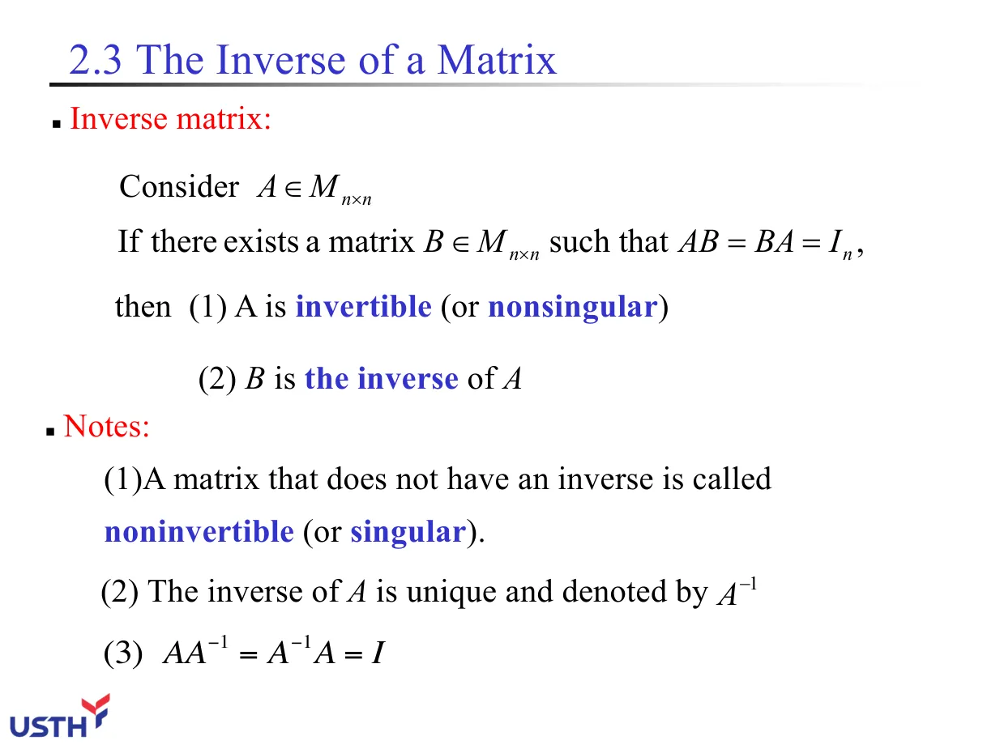
For $A\in M_{n\times n}$, if there is $B\in M_{n\times n}$ with $AB=BA=I_n$, then $A$ is invertible (nonsingular) and $B$ is the inverse of $A$. Notes: (1) a matrix with no inverse is noninvertible (singular); (2) the inverse, when it exists, is unique, denoted $A^{-1}$; (3) $AA^{-1}=A^{-1}A=I$. Only square matrices can be invertible.
Với $A\in M_{n\times n}$, nếu tồn tại $B\in M_{n\times n}$ với $AB=BA=I_n$ thì $A$ khả nghịch (không suy biến) và $B$ là nghịch đảo của $A$. Lưu ý: (1) ma trận không có nghịch đảo là không khả nghịch (suy biến); (2) nghịch đảo, nếu tồn tại, là duy nhất, ký hiệu $A^{-1}$; (3) $AA^{-1}=A^{-1}A=I$. Chỉ ma trận vuông mới có thể khả nghịch.
Verify that $B=\begin{bmatrix}2&-1\\-5&3\end{bmatrix}$ is the inverse of $A=\begin{bmatrix}3&1\\5&2\end{bmatrix}$.
Kiểm tra $B=\begin{bmatrix}2&-1\\-5&3\end{bmatrix}$ là nghịch đảo của $A=\begin{bmatrix}3&1\\5&2\end{bmatrix}$.
Answer and solution · Đáp án và lời giải
Answer · Đáp án: $AB=BA=I_2$
$AB=\begin{bmatrix}6-5&-3+3\\10-10&-5+6\end{bmatrix}=I_2$ and $BA=\begin{bmatrix}6-5&2-2\\-15+15&-5+6\end{bmatrix}=I_2$. Both products are needed in the definition.
$AB=\begin{bmatrix}6-5&-3+3\\10-10&-5+6\end{bmatrix}=I_2$ và $BA=\begin{bmatrix}6-5&2-2\\-15+15&-5+6\end{bmatrix}=I_2$. Định nghĩa cần cả hai tích.
Finding an inverse: solving three systems · Tìm ma trận nghịch đảo: giải ba hệ
★★★ Core · Cốt lõi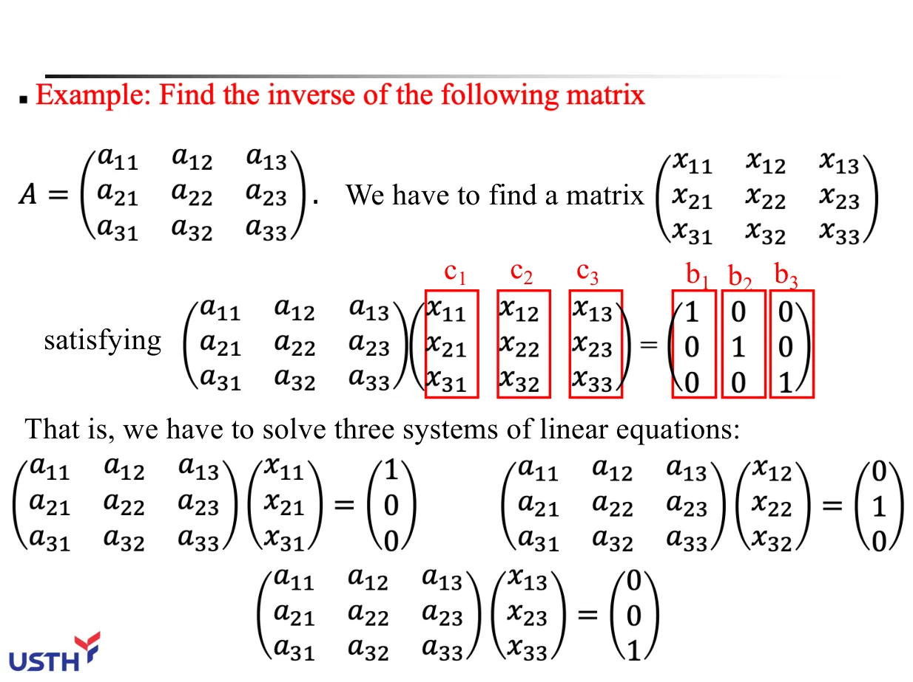
To find the inverse of a $3\times3$ matrix $A$ we need a matrix $X=[x_{ij}]$ with $AX=I$. Write $X=[c_1\ c_2\ c_3]$ by columns and $I=[b_1\ b_2\ b_3]$: the single equation $AX=I$ means three linear systems $Ac_1=b_1$, $Ac_2=b_2$, $Ac_3=b_3$, where $b_j$ is the $j$-th column of $I$. So the $j$-th column of $A^{-1}$ solves $Ax=e_j$.
Để tìm ma trận nghịch đảo của ma trận $3\times3$ $A$ ta cần ma trận $X=[x_{ij}]$ với $AX=I$. Viết $X=[c_1\ c_2\ c_3]$ theo cột và $I=[b_1\ b_2\ b_3]$: một phương trình $AX=I$ nghĩa là ba hệ tuyến tính $Ac_1=b_1$, $Ac_2=b_2$, $Ac_3=b_3$, trong đó $b_j$ là cột thứ $j$ của $I$. Vậy cột thứ $j$ của $A^{-1}$ nghiệm đúng $Ax=e_j$.
For $A=\begin{bmatrix}2&1\\5&3\end{bmatrix}$ show that the second column of $A^{-1}$ solves $Ax=(0,1)^T$ and find it.
Với $A=\begin{bmatrix}2&1\\5&3\end{bmatrix}$ chứng tỏ cột thứ hai của $A^{-1}$ nghiệm đúng $Ax=(0,1)^T$ và tìm nó.
Answer and solution · Đáp án và lời giải
Answer · Đáp án: $(-1,2)^T$
Solve $2x+y=0$, $5x+3y=1$: $y=-2x$, then $5x-6x=1$, $x=-1$, $y=2$. So $c_2=(-1,2)^T$, and $A^{-1}=\begin{bmatrix}3&-1\\-5&2\end{bmatrix}$ has this second column.
Giải $2x+y=0$, $5x+3y=1$: $y=-2x$, rồi $5x-6x=1$, $x=-1$, $y=2$. Vậy $c_2=(-1,2)^T$, và $A^{-1}=\begin{bmatrix}3&-1\\-5&2\end{bmatrix}$ có cột thứ hai này.
Solve the systems simultaneously · Giải đồng thời các hệ
★★★ Core · Cốt lõi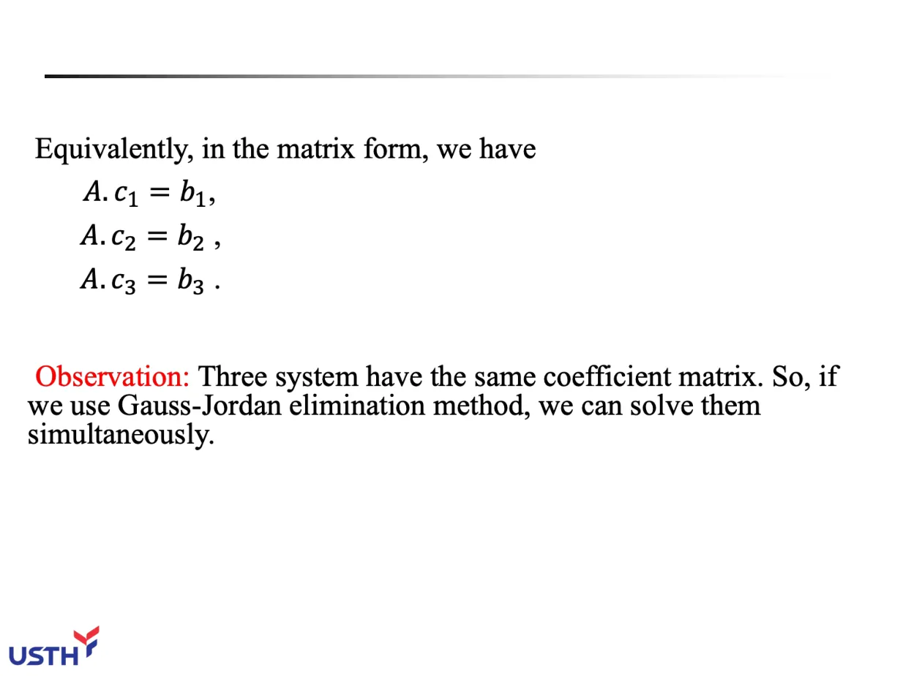
Equivalently, in matrix form $A\,c_1=b_1$, $A\,c_2=b_2$, $A\,c_3=b_3$. Observation: the three systems have the same coefficient matrix, so one Gauss-Jordan elimination on the wide matrix $[A\mid b_1\ b_2\ b_3]=[A\mid I]$ solves all three at once. The row operations act on every column of the right-hand block in the same way.
Tương đương, dạng ma trận $A\,c_1=b_1$, $A\,c_2=b_2$, $A\,c_3=b_3$. Quan sát: ba hệ có cùng ma trận hệ số, nên một lần khử Gauss-Jordan trên ma trận rộng $[A\mid b_1\ b_2\ b_3]=[A\mid I]$ giải được cả ba cùng lúc. Các phép biến đổi hàng tác động lên mọi cột của khối bên phải theo cùng một cách.
Solve $AX=B$ for $A=\begin{bmatrix}1&2\\3&7\end{bmatrix}$, $B=\begin{bmatrix}1&3\\2&5\end{bmatrix}$ with one reduction of $[A\mid B]$.
Giải $AX=B$ với $A=\begin{bmatrix}1&2\\3&7\end{bmatrix}$, $B=\begin{bmatrix}1&3\\2&5\end{bmatrix}$ bằng một lần rút gọn $[A\mid B]$.
Answer and solution · Đáp án và lời giải
Answer · Đáp án: $X=\begin{bmatrix}3&11\\-1&-4\end{bmatrix}$
$\begin{bmatrix}1&2&1&3\\3&7&2&5\end{bmatrix}\xrightarrow{R_2-3R_1}\begin{bmatrix}1&2&1&3\\0&1&-1&-4\end{bmatrix}\xrightarrow{R_1-2R_2}\begin{bmatrix}1&0&3&11\\0&1&-1&-4\end{bmatrix}$. Check: $AX=\begin{bmatrix}3-2&11-8\\9-7&33-28\end{bmatrix}=B$ ✓.
$\begin{bmatrix}1&2&1&3\\3&7&2&5\end{bmatrix}\xrightarrow{R_2-3R_1}\begin{bmatrix}1&2&1&3\\0&1&-1&-4\end{bmatrix}\xrightarrow{R_1-2R_2}\begin{bmatrix}1&0&3&11\\0&1&-1&-4\end{bmatrix}$. Kiểm tra: $AX=\begin{bmatrix}3-2&11-8\\9-7&33-28\end{bmatrix}=B$ ✓.
Gauss-Jordan for the inverse: $[A\mid I]\to[I\mid A^{-1}]$ · Gauss-Jordan tìm nghịch đảo: $[A\mid I]\to[I\mid A^{-1}]$
★★★ Core · Cốt lõi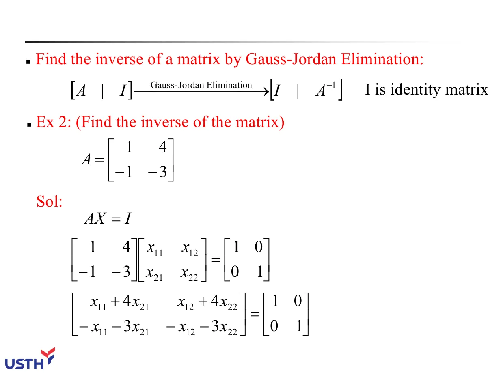
Method: write $[A\mid I]$ and apply Gauss-Jordan elimination until the left block becomes $I$; the right block is then $A^{-1}$: $[A\mid I]\to[I\mid A^{-1}]$. Example 2: $A=\begin{bmatrix}1&4\\-1&-3\end{bmatrix}$; we want $X=\begin{bmatrix}x_{11}&x_{12}\\x_{21}&x_{22}\end{bmatrix}$ with $AX=I$, which unrolls into the two systems $x_{11}+4x_{21}=1,\ -x_{11}-3x_{21}=0$ and $x_{12}+4x_{22}=0,\ -x_{12}-3x_{22}=1$.
Phương pháp: viết $[A\mid I]$ và khử Gauss-Jordan cho đến khi khối bên trái thành $I$; khi đó khối bên phải là $A^{-1}$: $[A\mid I]\to[I\mid A^{-1}]$. Ví dụ 2: $A=\begin{bmatrix}1&4\\-1&-3\end{bmatrix}$; ta cần $X=\begin{bmatrix}x_{11}&x_{12}\\x_{21}&x_{22}\end{bmatrix}$ với $AX=I$, khai triển thành hai hệ $x_{11}+4x_{21}=1,\ -x_{11}-3x_{21}=0$ và $x_{12}+4x_{22}=0,\ -x_{12}-3x_{22}=1$.
This is the standard algorithm for the inverse; the answer is checked by multiplying back, so there is no excuse for an arithmetic slip.
Đây là thuật toán chuẩn tìm nghịch đảo; đáp số được kiểm tra bằng cách nhân ngược lại nên không có lý do gì để sai số học.
Find $A^{-1}$ for $A=\begin{bmatrix}2&5\\1&3\end{bmatrix}$ by reducing $[A\mid I]$.
Tìm $A^{-1}$ với $A=\begin{bmatrix}2&5\\1&3\end{bmatrix}$ bằng cách rút gọn $[A\mid I]$.
Answer and solution · Đáp án và lời giải
Answer · Đáp án: $A^{-1}=\begin{bmatrix}3&-5\\-1&2\end{bmatrix}$
$\begin{bmatrix}2&5&1&0\\1&3&0&1\end{bmatrix}\xrightarrow{R_1\leftrightarrow R_2}\begin{bmatrix}1&3&0&1\\2&5&1&0\end{bmatrix}\xrightarrow{R_2-2R_1}\begin{bmatrix}1&3&0&1\\0&-1&1&-2\end{bmatrix}\xrightarrow{-R_2}\begin{bmatrix}1&3&0&1\\0&1&-1&2\end{bmatrix}\xrightarrow{R_1-3R_2}\begin{bmatrix}1&0&3&-5\\0&1&-1&2\end{bmatrix}$. Check: $\begin{bmatrix}2&5\\1&3\end{bmatrix}\begin{bmatrix}3&-5\\-1&2\end{bmatrix}=\begin{bmatrix}1&0\\0&1\end{bmatrix}$ ✓.
$\begin{bmatrix}2&5&1&0\\1&3&0&1\end{bmatrix}\xrightarrow{R_1\leftrightarrow R_2}\begin{bmatrix}1&3&0&1\\2&5&1&0\end{bmatrix}\xrightarrow{R_2-2R_1}\begin{bmatrix}1&3&0&1\\0&-1&1&-2\end{bmatrix}\xrightarrow{-R_2}\begin{bmatrix}1&3&0&1\\0&1&-1&2\end{bmatrix}\xrightarrow{R_1-3R_2}\begin{bmatrix}1&0&3&-5\\0&1&-1&2\end{bmatrix}$. Kiểm tra: $\begin{bmatrix}2&5\\1&3\end{bmatrix}\begin{bmatrix}3&-5\\-1&2\end{bmatrix}=\begin{bmatrix}1&0\\0&1\end{bmatrix}$ ✓.
Example 2: the result · Ví dụ 2: kết quả
★★★ Core · Cốt lõi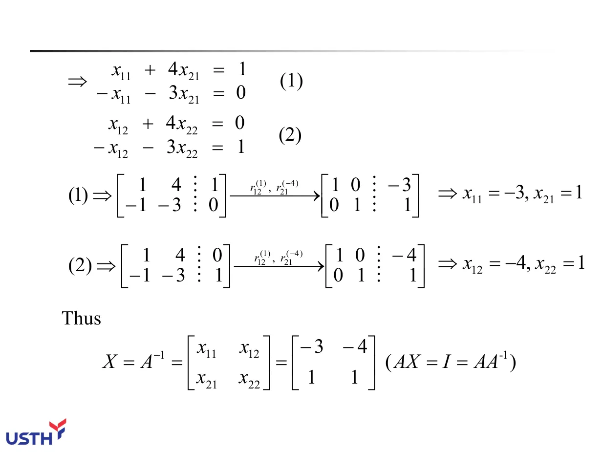
System 1: $\begin{bmatrix}1&4&1\\-1&-3&0\end{bmatrix}\xrightarrow{r_{12}^{(1)},r_{21}^{(-4)}}\begin{bmatrix}1&0&-3\\0&1&1\end{bmatrix}$, so $x_{11}=-3$, $x_{21}=1$. System 2: $\begin{bmatrix}1&4&0\\-1&-3&1\end{bmatrix}\to\begin{bmatrix}1&0&-4\\0&1&1\end{bmatrix}$, so $x_{12}=-4$, $x_{22}=1$. Hence $A^{-1}=\begin{bmatrix}-3&-4\\1&1\end{bmatrix}$ (indeed $AX=I=AA^{-1}$). For a $2\times2$ matrix there is also a formula: $\begin{bmatrix}a&b\\c&d\end{bmatrix}^{-1}=\frac1{ad-bc}\begin{bmatrix}d&-b\\-c&a\end{bmatrix}$ when $ad-bc\ne0$.
Hệ 1: $\begin{bmatrix}1&4&1\\-1&-3&0\end{bmatrix}\xrightarrow{r_{12}^{(1)},r_{21}^{(-4)}}\begin{bmatrix}1&0&-3\\0&1&1\end{bmatrix}$, nên $x_{11}=-3$, $x_{21}=1$. Hệ 2: $\begin{bmatrix}1&4&0\\-1&-3&1\end{bmatrix}\to\begin{bmatrix}1&0&-4\\0&1&1\end{bmatrix}$, nên $x_{12}=-4$, $x_{22}=1$. Do đó $A^{-1}=\begin{bmatrix}-3&-4\\1&1\end{bmatrix}$ (thật vậy $AX=I=AA^{-1}$). Với ma trận $2\times2$ còn có công thức: $\begin{bmatrix}a&b\\c&d\end{bmatrix}^{-1}=\frac1{ad-bc}\begin{bmatrix}d&-b\\-c&a\end{bmatrix}$ khi $ad-bc\ne0$.
Use the $2\times2$ formula to invert $\begin{bmatrix}3&1\\4&2\end{bmatrix}$ and re-check the slide's inverse $\begin{bmatrix}-3&-4\\1&1\end{bmatrix}$ of $\begin{bmatrix}1&4\\-1&-3\end{bmatrix}$.
Dùng công thức $2\times2$ để nghịch đảo $\begin{bmatrix}3&1\\4&2\end{bmatrix}$ và kiểm tra lại nghịch đảo $\begin{bmatrix}-3&-4\\1&1\end{bmatrix}$ của $\begin{bmatrix}1&4\\-1&-3\end{bmatrix}$ trên slide.
Answer and solution · Đáp án và lời giải
Answer · Đáp án: $\begin{bmatrix}1&-\frac12\\-2&\frac32\end{bmatrix}$; the slide's inverse is correct
$ad-bc=3\cdot2-1\cdot4=2$, so the inverse is $\frac12\begin{bmatrix}2&-1\\-4&3\end{bmatrix}=\begin{bmatrix}1&-\frac12\\-2&\frac32\end{bmatrix}$. For the slide's matrix $ad-bc=-3+4=1$ and $\frac11\begin{bmatrix}-3&-4\\1&1\end{bmatrix}$ matches.
$ad-bc=3\cdot2-1\cdot4=2$, nên nghịch đảo là $\frac12\begin{bmatrix}2&-1\\-4&3\end{bmatrix}=\begin{bmatrix}1&-\frac12\\-2&\frac32\end{bmatrix}$. Với ma trận của slide $ad-bc=-3+4=1$ và $\frac11\begin{bmatrix}-3&-4\\1&1\end{bmatrix}$ khớp.
When there is no inverse · Khi không có nghịch đảo
★★★ Core · Cốt lõi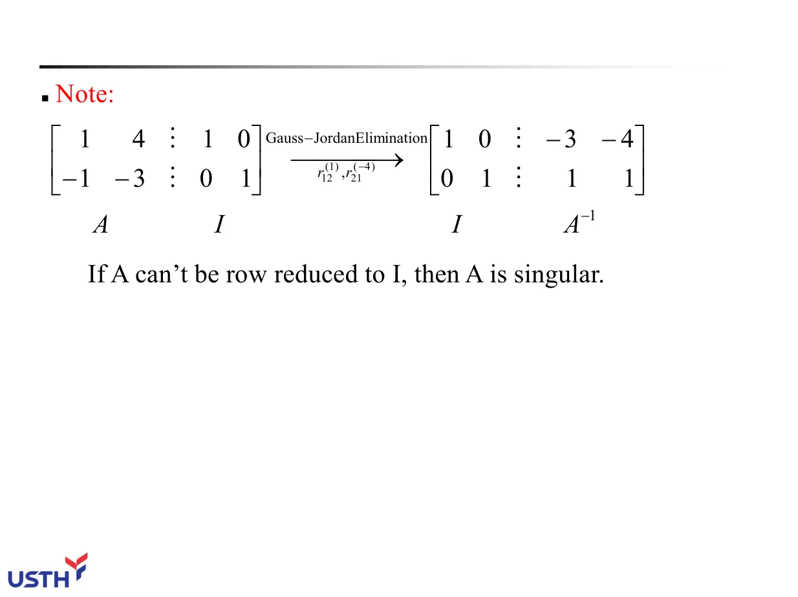
Note: $[A\mid I]\xrightarrow{\text{Gauss-Jordan}}[I\mid A^{-1}]$. If $A$ cannot be row reduced to $I$, then $A$ is singular. In practice this shows up as a zero row in the left block during the reduction: stop and conclude "not invertible".
Lưu ý: $[A\mid I]\xrightarrow{\text{Gauss-Jordan}}[I\mid A^{-1}]$. Nếu $A$ không thể rút gọn hàng về $I$ thì $A$ suy biến. Trong thực hành điều này thể hiện bằng một hàng toàn số không ở khối bên trái trong lúc rút gọn: dừng lại và kết luận "không khả nghịch".
Show that $A=\begin{bmatrix}1&2\\2&4\end{bmatrix}$ is singular by reducing $[A\mid I]$.
Chứng tỏ $A=\begin{bmatrix}1&2\\2&4\end{bmatrix}$ suy biến bằng cách rút gọn $[A\mid I]$.
Answer and solution · Đáp án và lời giải
Answer · Đáp án: the left block gets a zero row; $\det A=0$
$\begin{bmatrix}1&2&1&0\\2&4&0&1\end{bmatrix}\xrightarrow{R_2-2R_1}\begin{bmatrix}1&2&1&0\\0&0&-2&1\end{bmatrix}$: the left block has a zero row, so it can never become $I$. Consistently $\det A=4-4=0$.
$\begin{bmatrix}1&2&1&0\\2&4&0&1\end{bmatrix}\xrightarrow{R_2-2R_1}\begin{bmatrix}1&2&1&0\\0&0&-2&1\end{bmatrix}$: khối bên trái có hàng không nên không bao giờ thành $I$. Nhất quán với $\det A=4-4=0$.
Example 3: a $3\times3$ inverse, steps 1-4 · Ví dụ 3: nghịch đảo $3\times3$, bước 1-4
★★★ Core · Cốt lõi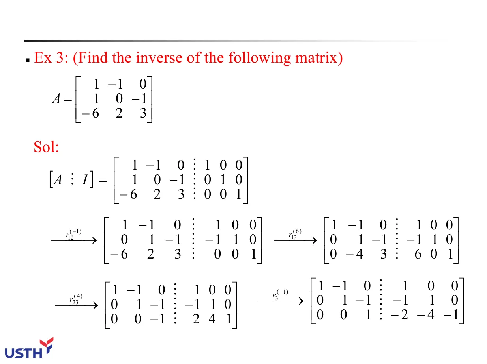
Find the inverse of $A=\begin{bmatrix}1&-1&0\\1&0&-1\\-6&2&3\end{bmatrix}$. Start with $[A\mid I]=\begin{bmatrix}1&-1&0&1&0&0\\1&0&-1&0&1&0\\-6&2&3&0&0&1\end{bmatrix}$. $r_{12}^{(-1)}$: $R_2-R_1\to R_2$ gives $(0,1,-1\mid-1,1,0)$. $r_{13}^{(6)}$: $R_3+6R_1\to R_3$ gives $(0,-4,3\mid6,0,1)$. $r_{23}^{(4)}$: $R_3+4R_2\to R_3$ gives $(0,0,-1\mid2,4,1)$. $r_3^{(-1)}$: $-R_3$ gives $(0,0,1\mid-2,-4,-1)$.
Tìm nghịch đảo của $A=\begin{bmatrix}1&-1&0\\1&0&-1\\-6&2&3\end{bmatrix}$. Bắt đầu với $[A\mid I]=\begin{bmatrix}1&-1&0&1&0&0\\1&0&-1&0&1&0\\-6&2&3&0&0&1\end{bmatrix}$. $r_{12}^{(-1)}$: $R_2-R_1\to R_2$ cho $(0,1,-1\mid-1,1,0)$. $r_{13}^{(6)}$: $R_3+6R_1\to R_3$ cho $(0,-4,3\mid6,0,1)$. $r_{23}^{(4)}$: $R_3+4R_2\to R_3$ cho $(0,0,-1\mid2,4,1)$. $r_3^{(-1)}$: $-R_3$ cho $(0,0,1\mid-2,-4,-1)$.
Find the inverse of $\begin{bmatrix}1&2&3\\0&1&4\\5&6&0\end{bmatrix}$.
Tìm nghịch đảo của $\begin{bmatrix}1&2&3\\0&1&4\\5&6&0\end{bmatrix}$.
Answer and solution · Đáp án và lời giải
Answer · Đáp án: $\begin{bmatrix}-24&18&5\\20&-15&-4\\-5&4&1\end{bmatrix}$
Reduce $[A\mid I]$: $R_3-5R_1$, then $R_3+4R_2$ gives the pivot $1$ in position $(3,3)$ with last row $(0,0,1\mid-5,4,1)$; clearing upwards ($R_2-4R_3$, $R_1-3R_3$, $R_1-2R_2$) yields the inverse above. Check: $A\,A^{-1}=I$.
Rút gọn $[A\mid I]$: $R_3-5R_1$, rồi $R_3+4R_2$ cho pivot $1$ ở vị trí $(3,3)$ với hàng cuối $(0,0,1\mid-5,4,1)$; khử ngược lên ($R_2-4R_3$, $R_1-3R_3$, $R_1-2R_2$) được nghịch đảo ở trên. Kiểm tra: $A\,A^{-1}=I$.
Example 3: the inverse and the check · Ví dụ 3: nghịch đảo và phép kiểm tra
★★★ Core · Cốt lõi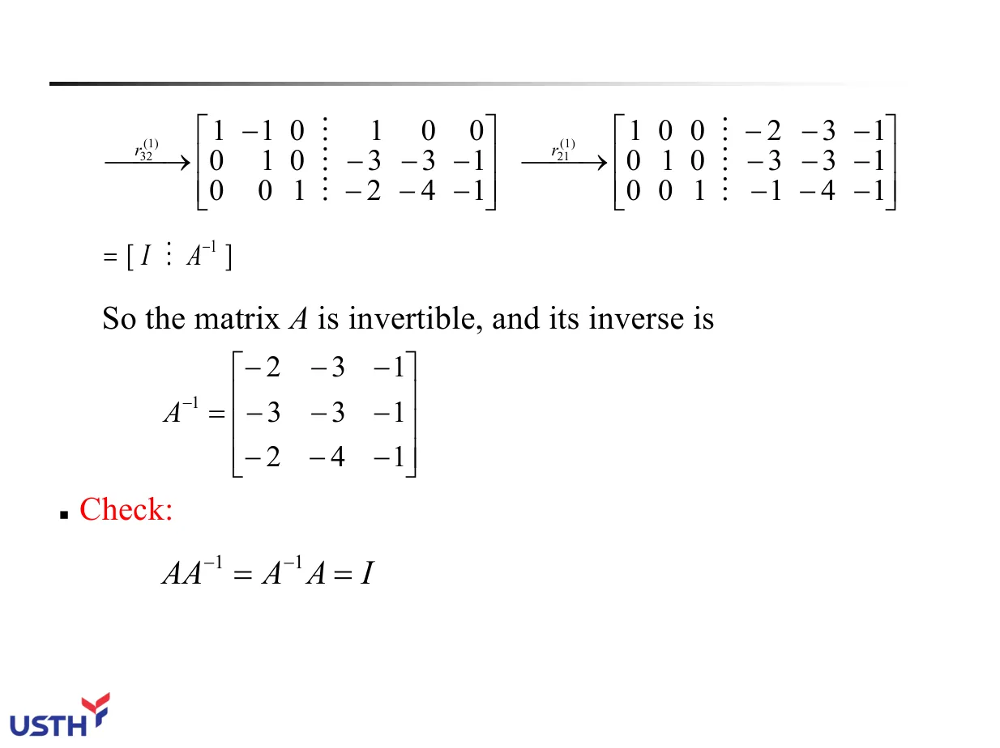
Continue: $r_{32}^{(1)}$ ($R_2+R_3\to R_2$) gives row 2 $=(0,1,0\mid-3,-3,-1)$ and row 3 $=(0,0,1\mid-2,-4,-1)$; $r_{21}^{(1)}$ ($R_1+R_2\to R_1$) gives row 1 $=(1,0,0\mid-2,-3,-1)$. So $[A\mid I]\to[I\mid A^{-1}]$ and $A^{-1}=\begin{bmatrix}-2&-3&-1\\-3&-3&-1\\-2&-4&-1\end{bmatrix}$. Check: $AA^{-1}=A^{-1}A=I$.
Tiếp tục: $r_{32}^{(1)}$ ($R_2+R_3\to R_2$) cho hàng 2 $=(0,1,0\mid-3,-3,-1)$ và hàng 3 $=(0,0,1\mid-2,-4,-1)$; $r_{21}^{(1)}$ ($R_1+R_2\to R_1$) cho hàng 1 $=(1,0,0\mid-2,-3,-1)$. Vậy $[A\mid I]\to[I\mid A^{-1}]$ và $A^{-1}=\begin{bmatrix}-2&-3&-1\\-3&-3&-1\\-2&-4&-1\end{bmatrix}$. Kiểm tra: $AA^{-1}=A^{-1}A=I$.
Check the slide's inverse by multiplying $A=\begin{bmatrix}1&-1&0\\1&0&-1\\-6&2&3\end{bmatrix}$ with $\begin{bmatrix}-2&-3&-1\\-3&-3&-1\\-2&-4&-1\end{bmatrix}$ on both sides.
Kiểm tra nghịch đảo của slide bằng cách nhân $A=\begin{bmatrix}1&-1&0\\1&0&-1\\-6&2&3\end{bmatrix}$ với $\begin{bmatrix}-2&-3&-1\\-3&-3&-1\\-2&-4&-1\end{bmatrix}$ ở cả hai phía.
Answer and solution · Đáp án và lời giải
Answer · Đáp án: $AA^{-1}=A^{-1}A=I_3$
Row 1 of $A$ times the columns of $A^{-1}$: $(-2+3,\ -3+3,\ -1+1)=(1,0,0)$. Row 2: $(-2+2,\ -3+4,\ -1+1)=(0,1,0)$. Row 3: $(12-6-6,\ 18-6-12,\ 6-2-3)=(0,0,1)$. The product on the other side is also $I_3$.
Hàng 1 của $A$ nhân các cột của $A^{-1}$: $(-2+3,\ -3+3,\ -1+1)=(1,0,0)$. Hàng 2: $(-2+2,\ -3+4,\ -1+1)=(0,1,0)$. Hàng 3: $(12-6-6,\ 18-6-12,\ 6-2-3)=(0,0,1)$. Tích ở phía bên kia cũng là $I_3$.
Powers of a square matrix · Lũy thừa của ma trận vuông
★★★ Core · Cốt lõi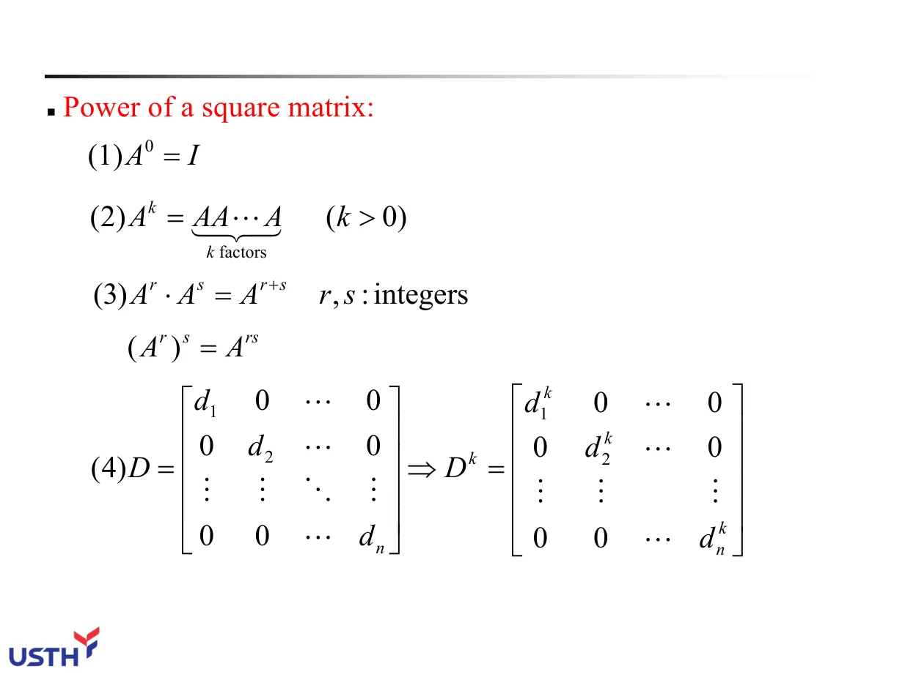
(1) $A^0=I$; (2) $A^k=AA\cdots A$ ($k$ factors, $k>0$); (3) $A^rA^s=A^{r+s}$ and $(A^r)^s=A^{rs}$ for integers $r,s$ (negative exponents need $A$ invertible: $A^{-k}=(A^{-1})^k$); (4) for a diagonal matrix $D=\operatorname{diag}(d_1,\dots,d_n)$, $D^k=\operatorname{diag}(d_1^k,\dots,d_n^k)$. Only (4) makes powers easy: that is the reason diagonalisation is useful later.
(1) $A^0=I$; (2) $A^k=AA\cdots A$ ($k$ thừa số, $k>0$); (3) $A^rA^s=A^{r+s}$ và $(A^r)^s=A^{rs}$ với $r,s$ nguyên (số mũ âm cần $A$ khả nghịch: $A^{-k}=(A^{-1})^k$); (4) với ma trận chéo $D=\operatorname{diag}(d_1,\dots,d_n)$, $D^k=\operatorname{diag}(d_1^k,\dots,d_n^k)$. Chỉ (4) làm lũy thừa dễ tính: đó là lý do chéo hóa hữu ích về sau.
For $A=\begin{bmatrix}1&1\\0&1\end{bmatrix}$ compute $A^2$, $A^3$ and guess $A^n$; compute $D^4$ for $D=\operatorname{diag}(2,-1,3)$.
Với $A=\begin{bmatrix}1&1\\0&1\end{bmatrix}$ tính $A^2$, $A^3$ và đoán $A^n$; tính $D^4$ với $D=\operatorname{diag}(2,-1,3)$.
Answer and solution · Đáp án và lời giải
Answer · Đáp án: $A^n=\begin{bmatrix}1&n\\0&1\end{bmatrix}$; $D^4=\operatorname{diag}(16,1,81)$
$A^2=\begin{bmatrix}1&2\\0&1\end{bmatrix}$, $A^3=\begin{bmatrix}1&3\\0&1\end{bmatrix}$: the top-right entry counts the factors, so $A^n=\begin{bmatrix}1&n\\0&1\end{bmatrix}$ (provable by induction). $D^4=\operatorname{diag}(2^4,(-1)^4,3^4)=\operatorname{diag}(16,1,81)$.
$A^2=\begin{bmatrix}1&2\\0&1\end{bmatrix}$, $A^3=\begin{bmatrix}1&3\\0&1\end{bmatrix}$: phần tử góc trên phải đếm số thừa số, nên $A^n=\begin{bmatrix}1&n\\0&1\end{bmatrix}$ (chứng minh được bằng quy nạp). $D^4=\operatorname{diag}(2^4,(-1)^4,3^4)=\operatorname{diag}(16,1,81)$.
Properties of inverse matrices, part 1 · Tính chất của ma trận nghịch đảo, phần 1
★★★ Core · Cốt lõi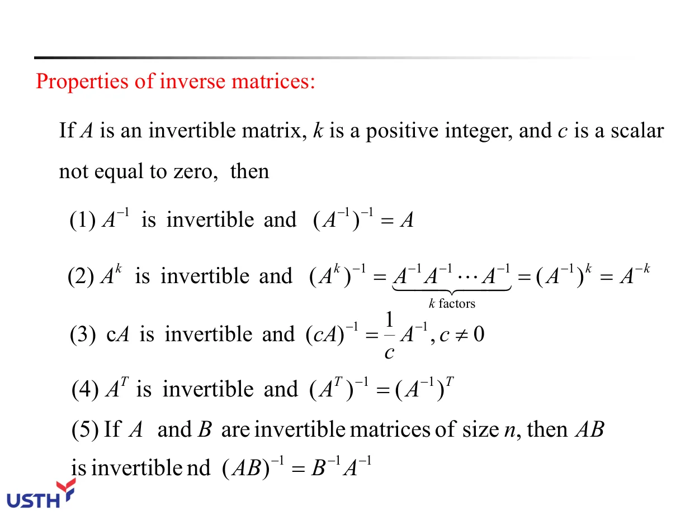
If $A$ is invertible, $k$ a positive integer and $c\ne0$: (1) $A^{-1}$ is invertible and $(A^{-1})^{-1}=A$; (2) $A^k$ is invertible and $(A^k)^{-1}=(A^{-1})^k=A^{-k}$; (3) $cA$ is invertible and $(cA)^{-1}=\frac1cA^{-1}$; (4) $A^T$ is invertible and $(A^T)^{-1}=(A^{-1})^T$; (5) if $A,B$ are invertible of size $n$ then $AB$ is invertible and $(AB)^{-1}=B^{-1}A^{-1}$ (reverse order, like socks and shoes).
Nếu $A$ khả nghịch, $k$ nguyên dương và $c\ne0$: (1) $A^{-1}$ khả nghịch và $(A^{-1})^{-1}=A$; (2) $A^k$ khả nghịch và $(A^k)^{-1}=(A^{-1})^k=A^{-k}$; (3) $cA$ khả nghịch và $(cA)^{-1}=\frac1cA^{-1}$; (4) $A^T$ khả nghịch và $(A^T)^{-1}=(A^{-1})^T$; (5) nếu $A,B$ khả nghịch cỡ $n$ thì $AB$ khả nghịch và $(AB)^{-1}=B^{-1}A^{-1}$ (thứ tự ngược, như tất và giày).
For $A=\begin{bmatrix}1&1\\0&1\end{bmatrix}$ and $B=\begin{bmatrix}1&0\\1&1\end{bmatrix}$ check $(AB)^{-1}=B^{-1}A^{-1}$ and show that $A^{-1}B^{-1}$ is different.
Với $A=\begin{bmatrix}1&1\\0&1\end{bmatrix}$ và $B=\begin{bmatrix}1&0\\1&1\end{bmatrix}$ kiểm tra $(AB)^{-1}=B^{-1}A^{-1}$ và chỉ ra $A^{-1}B^{-1}$ khác.
Answer and solution · Đáp án và lời giải
Answer · Đáp án: $(AB)^{-1}=B^{-1}A^{-1}=\begin{bmatrix}1&-1\\-1&2\end{bmatrix}$; $A^{-1}B^{-1}=\begin{bmatrix}2&-1\\-1&1\end{bmatrix}$
$AB=\begin{bmatrix}2&1\\1&1\end{bmatrix}$ with $\det=1$, so $(AB)^{-1}=\begin{bmatrix}1&-1\\-1&2\end{bmatrix}$. $B^{-1}A^{-1}=\begin{bmatrix}1&0\\-1&1\end{bmatrix}\begin{bmatrix}1&-1\\0&1\end{bmatrix}=\begin{bmatrix}1&-1\\-1&2\end{bmatrix}$ ✓. The other order gives $A^{-1}B^{-1}=\begin{bmatrix}1&-1\\0&1\end{bmatrix}\begin{bmatrix}1&0\\-1&1\end{bmatrix}=\begin{bmatrix}2&-1\\-1&1\end{bmatrix}\ne(AB)^{-1}$.
$AB=\begin{bmatrix}2&1\\1&1\end{bmatrix}$ với $\det=1$, nên $(AB)^{-1}=\begin{bmatrix}1&-1\\-1&2\end{bmatrix}$. $B^{-1}A^{-1}=\begin{bmatrix}1&0\\-1&1\end{bmatrix}\begin{bmatrix}1&-1\\0&1\end{bmatrix}=\begin{bmatrix}1&-1\\-1&2\end{bmatrix}$ ✓. Thứ tự kia cho $A^{-1}B^{-1}=\begin{bmatrix}1&-1\\0&1\end{bmatrix}\begin{bmatrix}1&0\\-1&1\end{bmatrix}=\begin{bmatrix}2&-1\\-1&1\end{bmatrix}\ne(AB)^{-1}$.
Properties of inverse matrices, part 2: cancellation, $Ax=b$, equivalent statements · Tính chất của ma trận nghịch đảo, phần 2: giản ước, $Ax=b$, các phát biểu tương đương
★★★ Core · Cốt lõi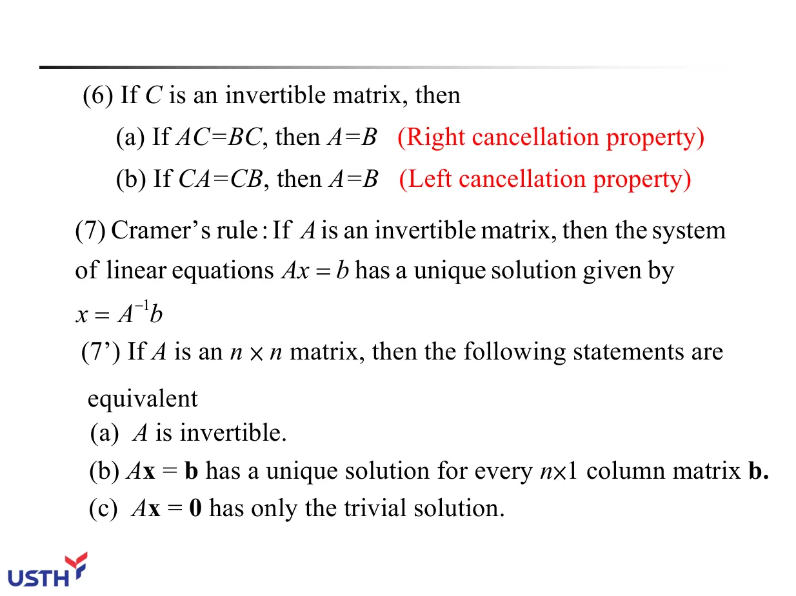
(6) If $C$ is invertible: $AC=BC\Rightarrow A=B$ (right cancellation) and $CA=CB\Rightarrow A=B$ (left cancellation). (7) If $A$ is invertible, $Ax=b$ has the unique solution $x=A^{-1}b$. (7') For an $n\times n$ matrix $A$ these are equivalent: (a) $A$ is invertible; (b) $Ax=b$ has a unique solution for every $n\times1$ column $b$; (c) $Ax=0$ has only the trivial solution. This is the first of the "big equivalence theorems" that will grow all through the course.
(6) Nếu $C$ khả nghịch: $AC=BC\Rightarrow A=B$ (giản ước phải) và $CA=CB\Rightarrow A=B$ (giản ước trái). (7) Nếu $A$ khả nghịch thì $Ax=b$ có nghiệm duy nhất $x=A^{-1}b$. (7') Với ma trận $A$ cỡ $n\times n$ các phát biểu sau tương đương: (a) $A$ khả nghịch; (b) $Ax=b$ có nghiệm duy nhất với mọi cột $b$ cỡ $n\times1$; (c) $Ax=0$ chỉ có nghiệm tầm thường. Đây là định lý tương đương "lớn" đầu tiên, sẽ được mở rộng dần trong suốt khóa học.
The equivalence (7') is the bridge between Lecture 1 (solving systems) and Lecture 2 (inverses); it is used to prove that a matrix is invertible without computing the inverse.
Sự tương đương (7') là cầu nối giữa Bài 1 (giải hệ) và Bài 2 (nghịch đảo); nó được dùng để chứng minh ma trận khả nghịch mà không cần tính nghịch đảo.
Solve $\begin{bmatrix}2&1\\5&3\end{bmatrix}x=\begin{bmatrix}3\\8\end{bmatrix}$ with $x=A^{-1}b$, and find for which $t$ the matrix $\begin{bmatrix}1&2\\2&t\end{bmatrix}$ is invertible.
Giải $\begin{bmatrix}2&1\\5&3\end{bmatrix}x=\begin{bmatrix}3\\8\end{bmatrix}$ bằng $x=A^{-1}b$, và tìm $t$ để ma trận $\begin{bmatrix}1&2\\2&t\end{bmatrix}$ khả nghịch.
Answer and solution · Đáp án và lời giải
Answer · Đáp án: $x=(1,1)^T$; invertible exactly when $t\ne4$
$A^{-1}=\begin{bmatrix}3&-1\\-5&2\end{bmatrix}$, so $x=\begin{bmatrix}9-8\\-15+16\end{bmatrix}=\begin{bmatrix}1\\1\end{bmatrix}$ (check: $2+1=3$, $5+3=8$). For the second matrix $\det=t-4$, which is nonzero iff $t\ne4$; at $t=4$ the second row is twice the first and $Ax=0$ has nontrivial solutions.
$A^{-1}=\begin{bmatrix}3&-1\\-5&2\end{bmatrix}$, nên $x=\begin{bmatrix}9-8\\-15+16\end{bmatrix}=\begin{bmatrix}1\\1\end{bmatrix}$ (kiểm tra: $2+1=3$, $5+3=8$). Với ma trận thứ hai $\det=t-4$, khác không khi và chỉ khi $t\ne4$; tại $t=4$ hàng hai gấp đôi hàng một và $Ax=0$ có nghiệm không tầm thường.